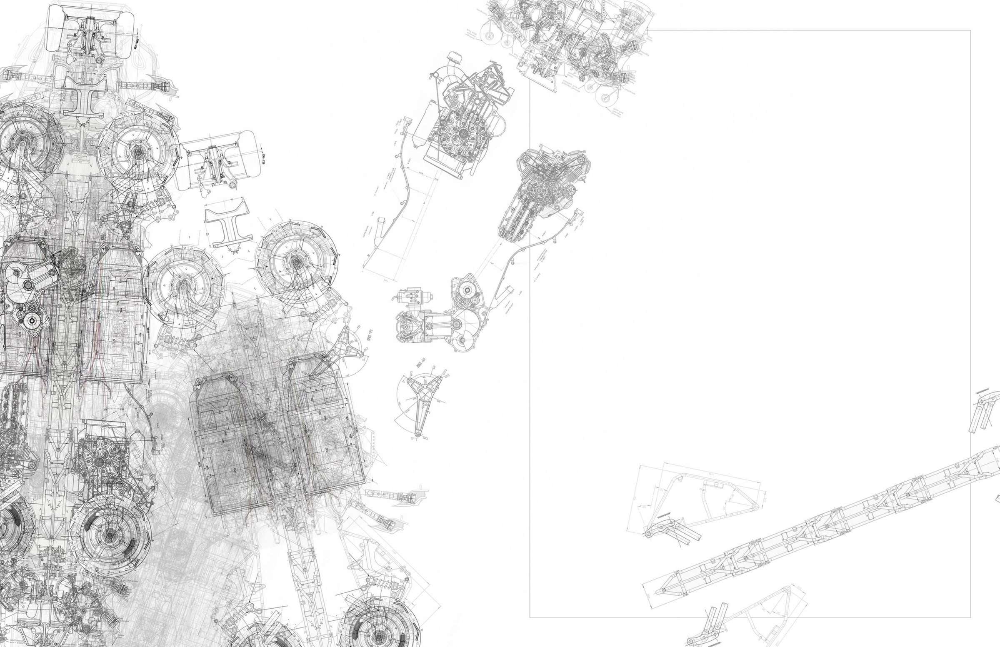
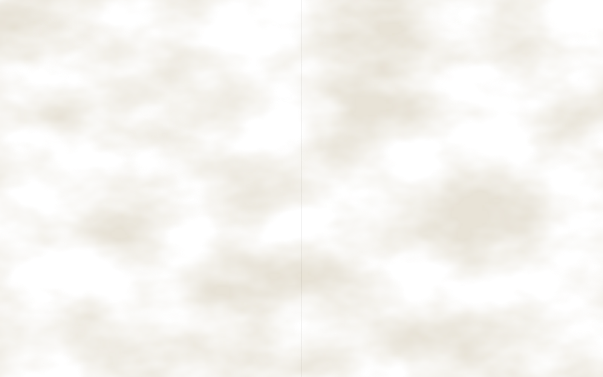
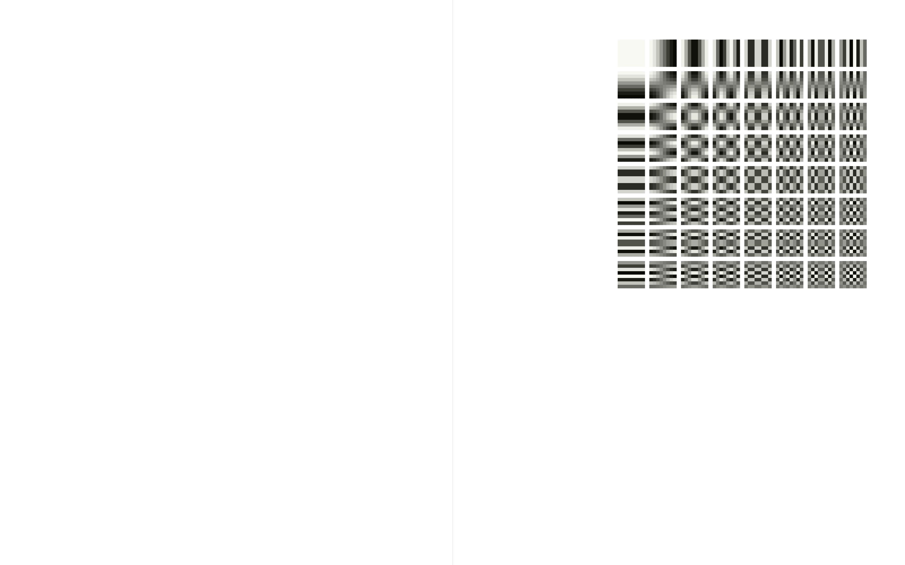
A short essay on how JPEG decides what a photograph can lose without your noticing, told through one picture of flamingos, with every formula in its place.
JPEG is a clever image compression algorithm that exploits a human perceptual bias and the structure of natural images. It makes a change of basis before encoding so that the rewritten image representation concentrates the signal that humans are most perceptive to, and thus, the remaining details can be discarded without horribly degrading visual fidelity.
A digital image is a mapping from two-dimensional spatial coordinates to pixel values:
Here is a finite grid of pixel locations and is the set of possible values. In the model, , representing three 8-bit color channels.
A property of human vision is that we are more sensitive to luminance (brightness) than to chrominance (color differences). Edges and fine detail in brightness are noticeable, while small variations in color are much harder to perceive. JPEG exploits this by separating brightness from color, meaning that instead of working directly in , each pixel is converted to the color space:
- represents luminance, or perceived brightness.
- measures how blue a pixel is relative to its brightness.
- measures how red it is.
Equivalently, the chroma channels encode how color deviates from the luminance signal: is proportional to and to .
The conversion is linear:
These weights are chosen so that approximates perceived brightness from the primaries used by the image standard, so the coefficients reflect how much each channel contributes to brightness rather than color alone. Green receives the largest weight because human vision is most sensitive in the middle of the visible spectrum, and because fine spatial detail is carried much more strongly there. The constant shifts chroma values into the standard – range used by 8-bit images.
Once luminance and chroma are separated, JPEG can reduce the spatial resolution of the chroma channels before applying further compression. This step is called chroma subsampling.
In 4:4:4, every pixel keeps its own chroma values. In 4:2:2, chroma is shared horizontally across neighboring pixels. In 4:2:0, chroma is shared across small neighborhoods. In 4:1:1, chroma is shared across groups of four horizontal pixels.
Because the human visual system is less sensitive to fine color detail, the reconstructed image still looks almost identical even though many chroma samples have been removed.


After chroma subsampling, JPEG no longer stores pixel values directly. Instead, across the , , and channels, each block is transformed into a weighted sum of cosine waves using the discrete cosine transform (DCT). The coefficient in the top-left represents the average brightness of the block, while coefficients farther to the right or lower down correspond to progressively higher horizontal or vertical spatial frequencies. In the basis functions below, is the horizontal frequency index and is the vertical frequency index.
DCT alone does not reduce the number of stored values: an block still produces coefficients. What changes is the representation. Because natural images are locally smooth, most of the signal lies in low spatial frequencies. After the transform, a small number of coefficients contain most of the block's energy, while many high-frequency coefficients are close to zero.
When the coefficients are quantized, many high-frequency terms are clipped to . Because the human visual system is less sensitive to fine, high-frequency detail, these coefficients can be discarded with little visible change to the image.
JPEG quantization divides each coefficient by an entry in a quantization matrix and rounds:
In practice, is usually taken from a standard JPEG luminance quantization table and then scaled by a quality factor. Larger values of cause more aggressive rounding. Since the entries of the matrix get larger toward higher spatial frequencies, those coefficients are much more likely to collapse to .
After quantization, JPEG still has to store the remaining coefficients efficiently. It does this by scanning the block in a zigzag pattern so that low frequencies appear first and the long tail of high-frequency zeros gets grouped together.
The first zigzag entry is the DC coefficient, which stores the average brightness
of the block and is encoded separately as a difference from the previous block's DC
term. The remaining AC coefficients are encoded with symbols of the form
, where run is the number of zeros before the next
nonzero value and size is the bit-width category of that next value. Standard JPEG luminance Huffman tables assign Huffman codes to
each symbol, and finally the amplitude bits for the coefficient itself.
After entropy coding, the image file contains a compact description of the DCT coefficients rather than the pixel values themselves. Decoding just runs the same pipeline in reverse. The coefficients are recovered from the entropy codes, rescaled by the quantization matrix, and passed through an inverse DCT to reconstruct each block. The chroma channels are then upsampled, and the image is converted from back to for display.
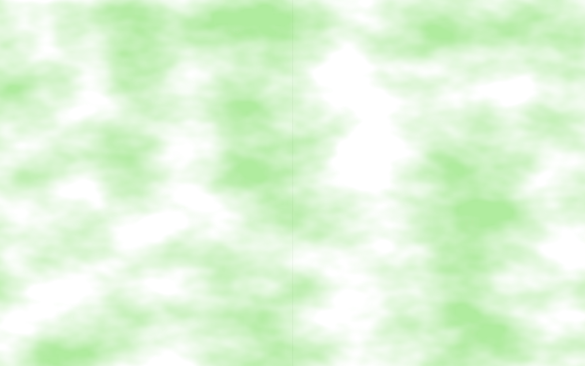
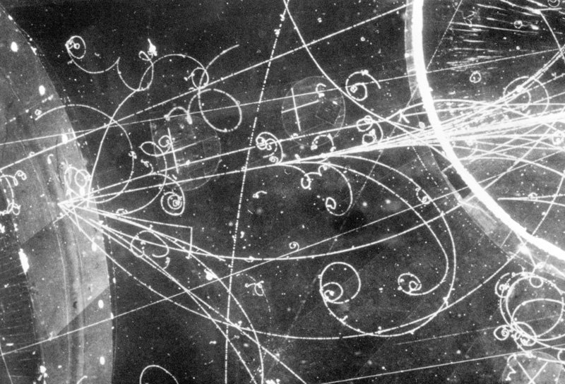
The Muon optimizer, derived from one exact principle in four steps, on the author's own green page.
Deriving Muon
Particle tracks in a bubble chamber. Fermilab.
We recently proposed Muon: a new neural net optimizer. Muon has garnered attention for its excellent practical performance: it was used to set NanoGPT speed records leading to interest from the big labs.
What makes Muon particularly special to me is that we derived the core numerical methods from an exact theoretical principle. This is in contrast to popular optimizers like Adam, which have more heuristic origins and often converge slower than Muon. In this post, I will walk through a derivation of Muon. I hope this will provide context that may help researchers extend the methods to new layer types and beyond.
While this post focuses on the theory behind Muon, I recommend checking out Keller’s post to learn more about the algorithm—including the substantial ingenuity that went into making the implementation run fast.
What is Muon?
Muon is an optimizer specifically designed for neural network layers. By , I mean layers that take an input vector and multiply by a weight matrix to return an output vector . There is also an expectation that the vectors and are “dense” activation vectors, meaning the entries are close to unit size. This latter requirement separates the layer from, say, an layer that takes one-hot inputs.
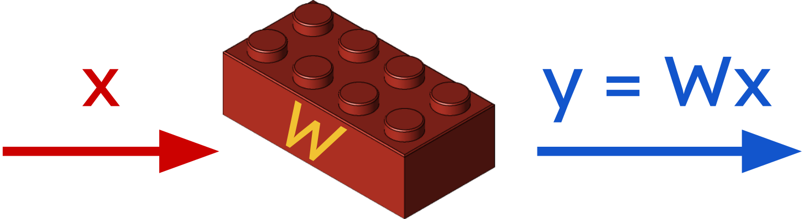
The Linear layer is an important building block in neural networks.
While it may seem suprising—and it is certainly non-standard—to use different optimizers for different layer types, this is part of our broader mission to “modularize” the theory of deep learning. The idea is to break up the architecture into building blocks, derive theory and algorithms for each separate piece, then work out how to glue the pieces together at the end.
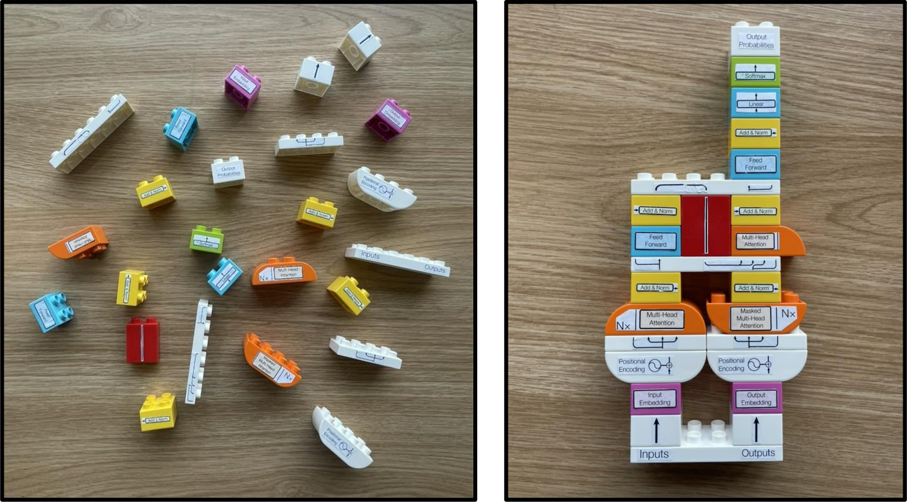
The Lego Transformer. Thanks to Idan Shenfeld for letting me play with this.
To handle individual layers, our idea is to normalize the weight updates in a clever way so that, given the structure of the inputs, the weight updates automatically induce a desirable effect on the outputs. As a community, we have invested so much effort into thinking about how to normalize the activations: think batch norm, layer norm, RMS norm, etc. Why not also consider how the weights and weight updates influence the activations?
Muon in four steps
Okay, time to focus! Back to Muon! In this post, we are going to derive the following version of the Muon update rule:
To unpack this expression:
In practice, Muon uses a slightly different dimensional pre-factor, but I’d actually expect the one here to scale better. The other difference is that in the Python implementation we apply Newton-Schulz to the momentum (essentially a running average of gradients) instead of to the gradient itself.
Step 1: Metrizing the linear layer
First, we will metrize the linear layer: that is, we will equip the inputs, weights and outputs with relevant measures of size. This will help us control the sizes of these quantities and also their updates through training.
In a neural network, a linear layer is intended to map from “dense” input vectors to “dense” output vectors. By “dense”, we mean that the average size of the entries is around one. We can quantify the average size of the entries using the root-mean-square (RMS) norm:
where is the dimension of the vector . The second equality states that the RMS norm is a normalized version of the Euclidean norm. If all the entries of a vector are , then the RMS norm of the vector is one.
Now, we ask the question: how can a weight matrix affect the RMS norm of its outputs, given that we know the RMS norm of its inputs? To answer this question, we need a tool known as the operator norm of a matrix.
The operator norm tells us how much a matrix can stretch an input vector.
The RMS-to-RMS operator norm is defined as the maximum amount by which a matrix can increase the average entry-size of its inputs:
The second equality says that the RMS-to-RMS operator norm is equivalent to a normalized version of the spectral norm of the matrix. The spectral norm is the largest singular value of the matrix.
Step 2: Perturbing the linear layer
We train a neural network by updating the weight matrices. These weight updates lead to changes in the layer outputs. In this step of the derivation, we will show that the operator norm of the weight update allows us to bound how much the outputs can change in response.
Consider applying an update to the weights of a linear layer. The resulting change in output is given by:
We can bound the size of the output perturbation in terms of the size of the weight perturbation just by applying the definition of the RMS-to-RMS operator norm:
A good way to think about this inequality is as the very simplest example of a more general idea: connecting the size of the weight update to the amount of change induced in the resulting function.
Step 3: Dualizing the gradient
For the third step in the derivation, we consider choosing a weight update to maximize the linear improvement in loss while maintaining a bound on the amount that the outputs can change in response. The rationale is that if the weight update makes the layer outputs change too much, this could de-stabilize the overall network. In symbols, we would like to solve:
To construct a proxy for solving this problem, we can apply inequality from the previous section to switch from controlling the size of the output change to directly controlling the size of the weight update itself. If the input has size , we obtain the following problem as a proxy:
In words: let’s minimize the linearized loss while controlling the size of the weight update. Seems reasonable! We refer to solving as “dualizing the gradient” under the RMS-to-RMS operator norm. If the gradient has singular value decomposition (SVD) given by , then is solved by:
In words: we keep the singular vectors of the gradient but throw away the magnitudes of the singular values. This corresponds to “orthogonalizing” the gradient. A sanity check that this is a sensible operation is to see that the update encourages inequality to hold tightly, meaning that the update tries to saturate the bound on the change in output. Later on, we will see that this property leads to learning rate transfer across width.
One challenge remains before we can turn the update rule into a workable algorithm. Orthogonalizing the gradient would naïvely require computing the SVD of the gradient, which seems too expensive to be practical at large-scale. But fear not, we shall develop a workaround!
Step 4: Dualizing fast via Newton-Schulz
The final step in the derivation is to work out a fast means of performing the gradient orthogonalization step:
We proposed performing this step via a so-called “Newton-Schulz” iteration. The main idea underlying the technique is that odd matrix polynomials “commute” with the SVD. In other words, for an odd polynomial
applying to the matrix is equivalent to applying directly to the singular values of and then putting the singular vectors back together:
To orthogonalize a matrix, we would like to set all the singular values to one. Since all the singular values are positive, we can think of this as applying the sign function to the singular values. While the sign function is an odd function, it is unfortunately not a polynomial. However, we can produce low-order odd polynomials that converge to the sign function when iterated. A simple example (Kovarik, 1970) is the cubic polynomial:
To visualize this cubic, we plot the scalar function on the left. And on the right, we plot the cubic composed with itself 5 times to obtain . Notice that the iterated cubic starts to resemble the sign function in the neighbourhood of the origin:
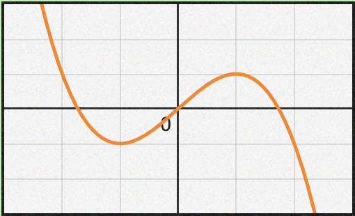
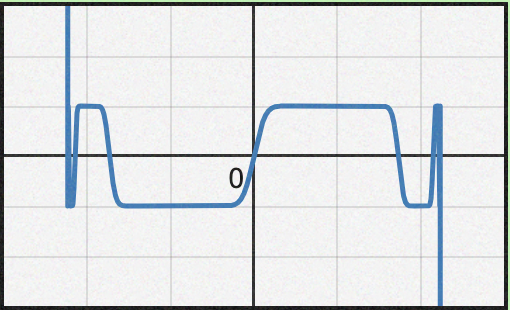
In fact, will converge to so long as the initial singular values are normalized to be less than . We call this a “Newton-Schulz iteration” following the terminology of Nick Higham.
All that remains is to combine update rule with a Newton-Schulz iteration, et voilà—we have derived our version of Muon!
Payoff #1: Fast training with automatic learning rate transfer
Phew, that was a lot of work! But we are finally ready to see the payoff. The first payoff is that dualizing the gradient under the RMS-to-RMS operator norm leads to both fast and scalable training. The following plot shows that dualizing the gradient under the RMS-to-RMS norm leads to learning rate transfer across width and a much better final loss than training with Adam.
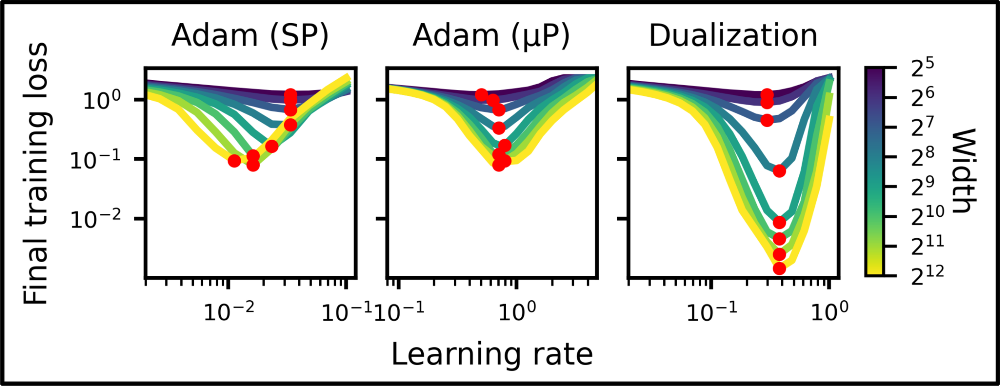
Training MLPs on CIFAR. Dualized training is both faster than conventional training and leads to automatic learning rate transfer across width. SP stands for standard parameterization and μP stands for maximal update parameterization. Thanks to Laker Newhouse for running this experiment.
The reason that dualizing the gradient in the RMS-to-RMS operator norm leads to learning rate transfer across width is that the dualized updates encourage inequality to hold tightly, meaning that the updates try to induce a controlled amount of RMS output change independent of width.
There was already a well-known technique for achieving learning rate transfer across width: the so-called maximal update parameterization, or μP for short. We have shown that the μP learning rate scaling is obtained automatically by dualizing the gradient in the “correct” norm. As such, I believe that μP and Muon are really two sides of the same coin.
Payoff #2: Simpler numerical properties
A more subtle payoff is that Muon has somewhat simpler numerical properties than other optimizers. To visualize this, I ran an experiment inspired by Jesus et al. (2020) where we watermark an initial weight matrix with the letter “a” and then track the erasure of the watermark as we train. This allows us to visually tell how much the weights move through training.
In the following plot, we show the final visibility of the watermark after training with both dualized and non-dualized updates over a range of different learning rates. As can be seen, not only does dualized training converge faster, but it also leads to faster erasure of the watermark.
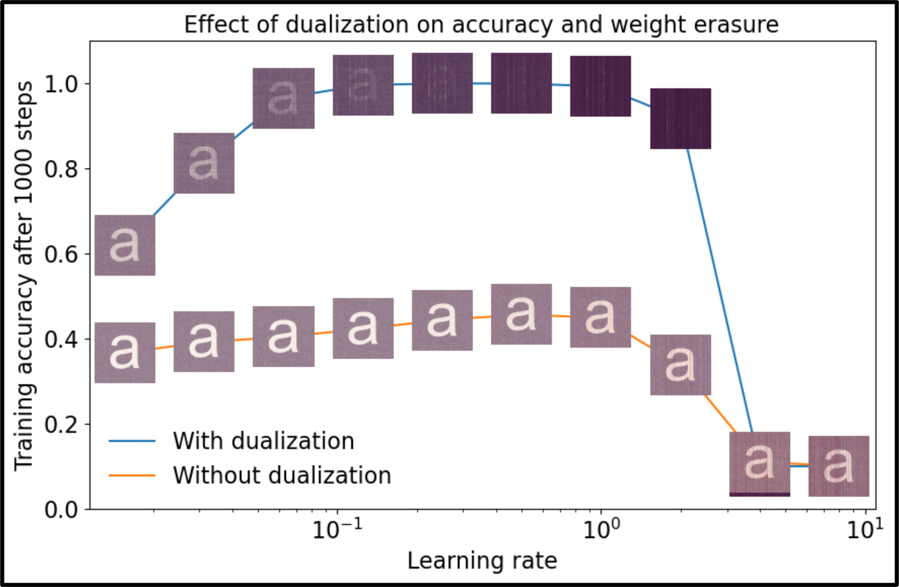
Dualized training converges faster and erases the watermark faster. I wrote up a thorough explanation for this effect in the Modula docs.
I believe this experiment underscores how properly metrized and dualized deep learning can have an impact on the kinds of number systems and precision levels we use to represent and train neural networks.
This effect also has theoretical implications. Many researchers took the observation that the weight entries seem to hardly move in standard training as evidence that it was safe to study deep learning in a linearized regime around the initialization. This is the so-called neural tangent kernel (NTK) regime. But the weight erasure experiment shows that in dualized training the weights can move substantially from their initial values.
Related work
There have been a couple of papers from the past decade that also had the idea of orthogonalizing and dualizing the gradients in deep learning optimization. I highly recommend checking out the following two papers:
We had the idea for spectral norm dualization independently of these papers. That said, our main theoretical novelties in hindsight are to propose using the Newton-Schulz iteration to enable very fast orthogonalization on GPUs, and to propose using the RMS-to-RMS operator norm instead of the spectral norm, leading to learning rate transfer across width.
It is also important to credit the proponents and developers of the Shampoo optimizer. The kinds of numerical routines used inside Shampoo are what made me realize back in August 2024 that orthogonalization could be feasible on GPUs at scale. Check out the following papers:
Finally, I must mention the AlgoPerf competition. It feels like it breathed fresh life into the field of deep learning optimization, and spurred me to take a closer look at Shampoo. Check out the two write-ups from the team:
If you are interested to find more papers on this topic, I am collating a reading list on the Modula docs. Let me know if I should add anything!
Conclusion: The geometry of neural networks
To summarize, in this post:
I want to finish the post by discussing what I see as the bigger picture here.
For a long time, neural networks felt to me like inscrutable beasts. A tangled web of complicated interacting effects: high-dimensional spaces, tensors, compositionality, stochasticity… You name it! The analytical tools we had at our disposal felt inadequate in the face of this complexity.
I am now feeling more optimistic that we can in fact disentangle this complicated web and formalize a neural network as a set of precise mathematical concepts with understood interactions. I see this as the long-term goal of the Modula project. I have been lucky to work with some of the best scientists and mathematicians in the world to get to this point.
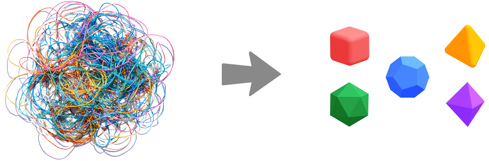
Can we distentangle neural networks into precise mathematical concepts?
One of these important mathematical concepts is the idea of geometry. There is an old and deep connection between optimization and geometry, with different notions of distance leading to different optimization theories:
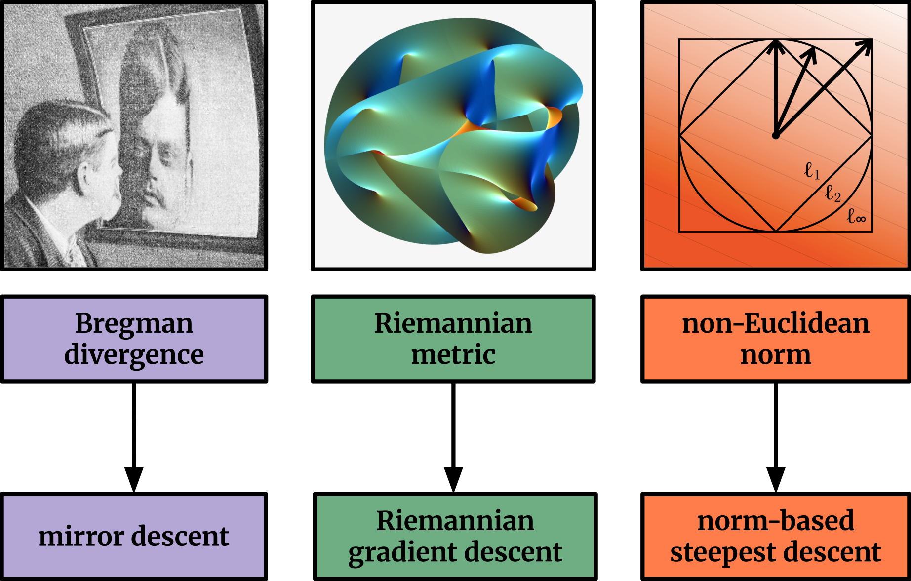
Different notions of distance lead to different optimization theories.
In Muon, we are exploiting the geometry of a matrix that acts as a linear operator between RMS-normed vector spaces. In particular, we build on a geometric connection between distance in weight space and distance in function space. We have already put significant work into extending this idea to general network architectures: starting with my work on deep relative trust and leading up to our most recent work on the modular norm and modular duality. I am excited to see where this work goes from here!
Citing this blog post
To cite this blog post, you can use the following BibTeX entry:
@misc{bernstein2025deriving,
author = {Jeremy Bernstein},
title = {Deriving Muon},
url = {https://jeremybernste.in/writing/deriving-muon},
year = {2025}
}
The official citation for the Muon optimizer is:
@misc{jordan2024muon,
author = {Keller Jordan and Yuchen Jin and Vlado Boza and Jiacheng You and Franz Cesista and Laker Newhouse and Jeremy Bernstein},
title = {Muon: An optimizer for hidden layers in neural networks},
url = {https://kellerjordan.github.io/posts/muon/},
year = {2024}
}Python code for Muon is available here.
Acknowledgements
I am grateful to Phillip Isola, Laker Newhouse, Isha Puri and Akarsh Kumar for helpful discussions and feedback on this blog post. I am extremely grateful to Phillip Isola for granting me the freedom to pursue this research. Thanks to Jyo Pari for doing the lego transformer photo shoot with me.
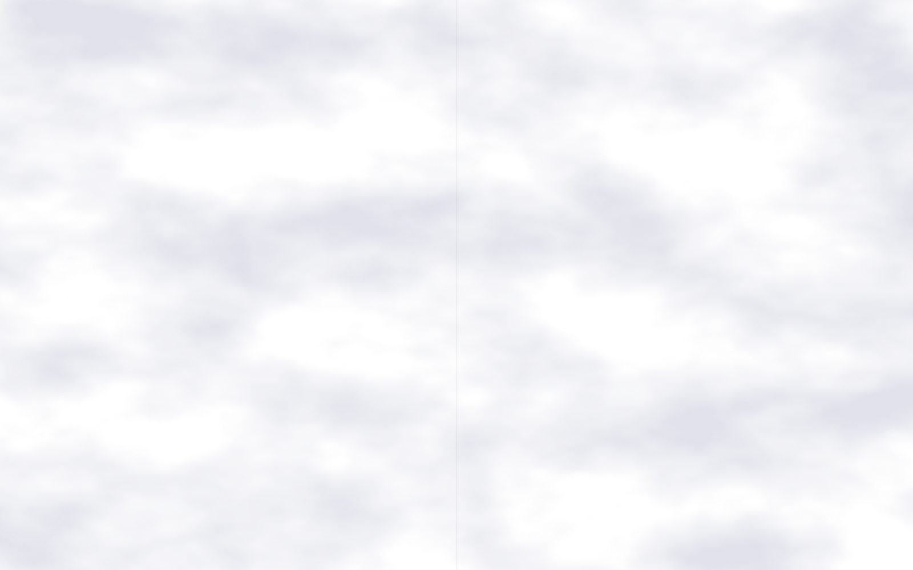
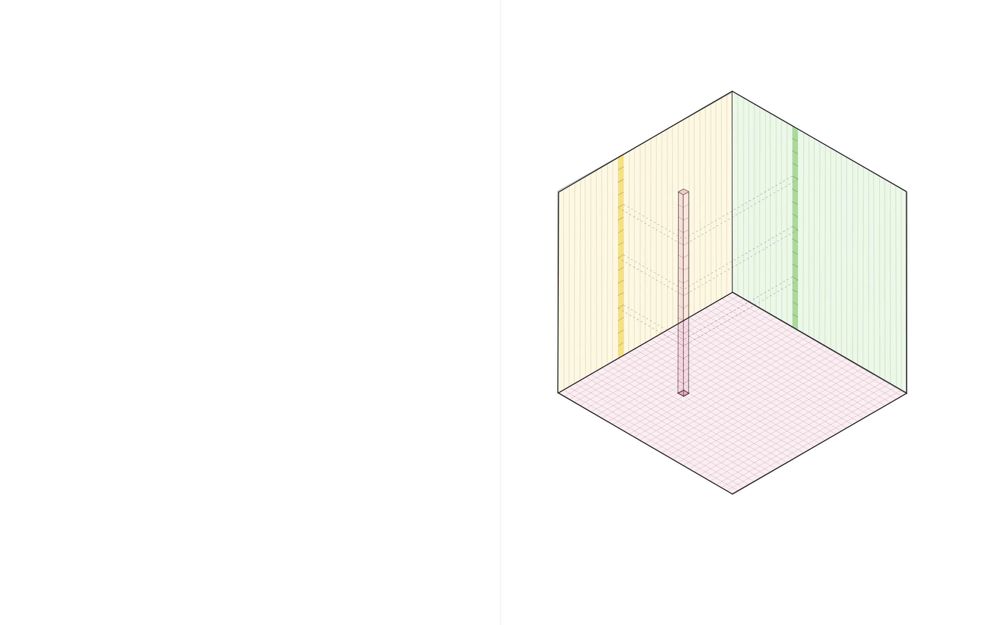
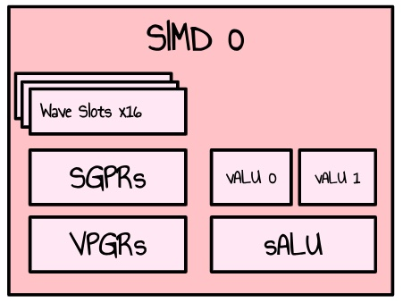
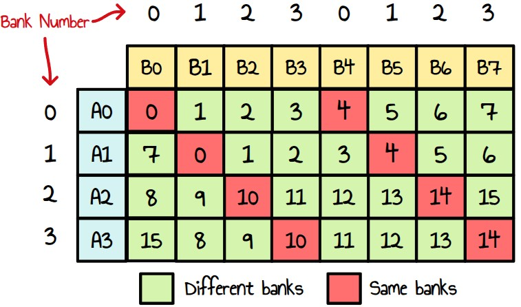
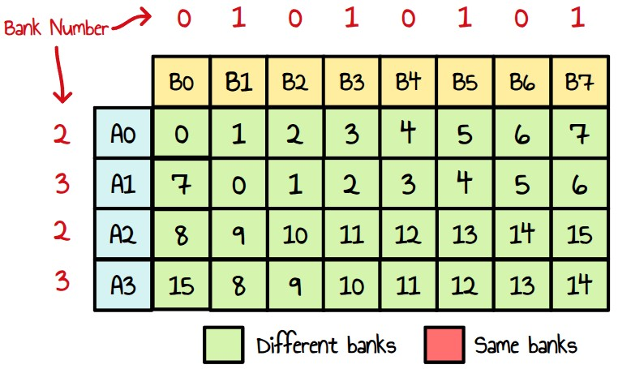
One matrix multiplication on an AMD Radeon 7900 XTX, written eight times, each kernel faster than the last, with every listing, profile and hand-drawn diagram along the way.
Introduction
Hi everyone !
In this post, I will share with you all the steps to write an optimized FP32 matrix multiplication on AMD RDNA3 GPU outperforming rocBLAS by 60%. I will cover some basics and explain all the optimizations I have implemented. This will be done in a iterative way in 8 differents Kernels.

Figure 1: sneak peek of the performance results
I primary intended to work on this to deepen my understanding of RDNA3 and try out HIP and I felt like I needed to share what I learned doing this :).
Few things I like to say before we start :
- All the information I used comes from the publicly available ISA guide1
- I don’t intend to re-implement or replace rocBLAS
- I only focused on 4096x4096 matrices single precision (FP32) matrix multiplication for the sake of simplicity.
- All my tests were done on Windows 11 with a AMD Radeon 7900 XTX.
That being said, let’s start !
Problem statement
There is a lot of research happening on the way to improve the performance of matrix multiplication nowadays. Being a core algorithm in ML applications, any FLOPS we can exploit is golden.
Before proceeding, let’s recall the basics of matrix multiplication. Given two matrices:
- of size
- of size
Their product, , is computed as follows:
where is the resulting matrix of size .
For each output value of matrix C, we compute the dot product between the rows of matrix A and the columns of matrix B.
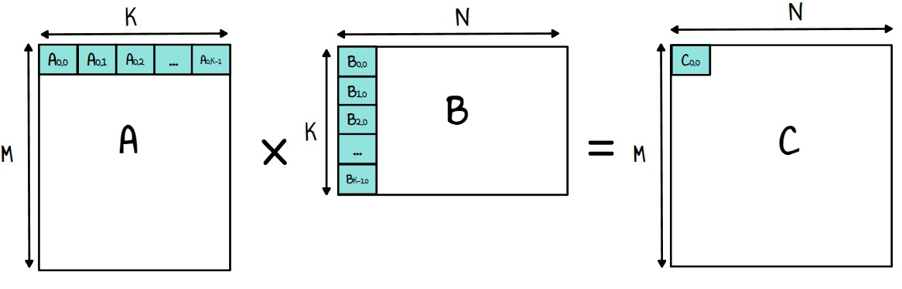
Figure 2: example for the first element of C
In terms of complexity, we have computational complexity and memory accesses. If we don’t think about architectural details, this is clearly a compute bound problem and our goal will be to be compute bound on the GPU.
Let’s say we manage to write the best implementation possible for the 7900 XTX. How fast could it run ? To answer this questions we need to look a bit at RDNA3 architecture.
RDNA3 GPUs are made of arrays of WorkGroup Processors (WGP). Every WGP are split into 2 Compute Units (CUs), themself split into 2 SIMDs. A SIMD handles the work of multiple threads organized in waves (or warps for CUDA folks) and has a set of components to do some work (like arithmetic operations). For Floating point operations, there are two 32 way VALU units.
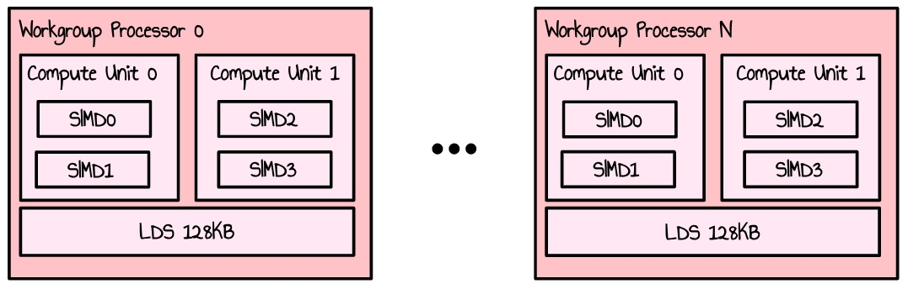
Figure 3: simplified representation of WGPs
Figure 4: simplified representation of a single SIMD
We can compute our theoritical floating point operation per second with this formula:
Every SIMD can issue 2 Floating points intructions per cycle (one on each vALU unit). If we use FMA instructions (Fused Multiply Add), each SIMD can issue floating point operations per cycle. The 7900 XTX has 48 WGPs, that’s SIMDs.
Our theoritical VRAM bandwidth is given by :
The 7900 XTX uses GDDR6 with a 384-bit bus running at 20 Gbps.
If we go back to our 4096x4096 matrix multiplication, we essentially need to do operations. With a 61 TFLops implementation, it would take roughly 2.23 ms to do the work and the bandwidth required to sustain this rate would be .
Of course, these are oversimplified calculations as they totally ignore memory hierarchy but we see that the available bandwidth is sufficiently high so that we can increase the amount of data we read to be closer to compute bound.
Kernel 1: naive implementation
Let’s start with a naive implementation like this :
__global__ void kernel1_naive(const float *A, const float *B, float *C, int M, int K, int N, float alpha, float beta)
{
int row = blockIdx.y * blockDim.y + threadIdx.y;
int col = blockIdx.x * blockDim.x + threadIdx.x;
if (row < M && col < N)
{
float acc_c = 0.0f;
for (int k = 0; k < K; ++k)
{
acc_c += A[row * K + k] * B[k * N + col];
}
C[row * N + col] = alpha * acc_c + beta * C[row * N + col];
}
}You will notice I am doing instead of here. This is because it makes easier to compare with libraries like rocBLAS where matrix multiplications is provided by SGEMM functions (Single-Precision General Matrix Multiply).
We launch 4096x4096 threads with a blocksize of 16x16 and each thread compute the inner dot product described before.
The performance for this kernel is 136 ms (1010.60 GFlops/s). I know, that’s pretty bad and far off our 61 TFLops target.
Kernel 0: rocBLAS reference implementation
Now that we have seen possibly the worst implementation in terms of performance, let’s look at the official rocBLAS implementation.
const int M = N;
const int K = N;
CHECK_ROCBLAS_STATUS(rocblas_sgemm(
handle,
rocblas_operation_none, // Transpose option for A
rocblas_operation_none, // Transpose option for B
M, // Number of rows in A and C
N, // Number of columns in B and C
K, // Number of columns in A and rows in B
&alpha, // alpha
d_a, // Matrix A on the device
M, // Leading dimension of A
d_b, // Matrix B on the device
K, // Leading dimension of B
&beta, // beta
d_c, // Matrix C on the device
M // Leading dimension of C
));As discussed before, I used rocblas_sgemm function with alpha and beta set to 1.02
The performance for this kernel is 4.49 ms (30547 GFLOPs/s). This is clearly much better than our kernel 1 but still far from our theoritical 61.4 TFlops/s.
By inspecting the ISA in RGP3, I couldn’t find any dual issue instructions in the kernel (only v_fmac_f32_e32)4
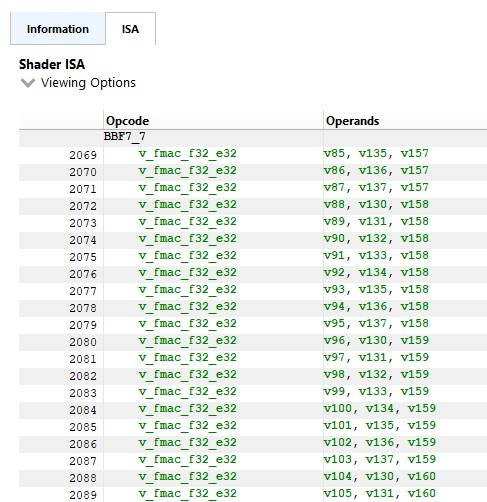
Figure 5: extract of rocBLAS ISA code
This is very surprising as this essentially means one of the VALU unit is sitting there doing nothing.
Considering this, the VALU utilization of this kernel is pretty impressive and almost 100 %. However, it’s really surprising we can’t exploit these dual issue instructions properly. I’ll come to that later.
Kernel 2: LDS Tiling
The main issue with our naive kernel is that our inner loop directly accesses global memory. This is inefficient because fetching data from global memory has a high latency, typically on the order of hundreds of cycles. Since each memory read is followed by minimal computation (just one multiplication and one addition), the GPU struggles to hide this latency, even with a large number of concurrent threads. Moreover, the algorithm repeatedly reads the same rows and columns from global memory across different threads, leading to redundant memory accesses and further exacerbating the performance bottleneck.
A solution to this problem is to load the data once into faster local memory and then iterate efficiently over it with all the threads. On RDNA3, we have the Local Data Store (LDS), a high-speed, low-latency memory accessible by all threads within a workgroup.
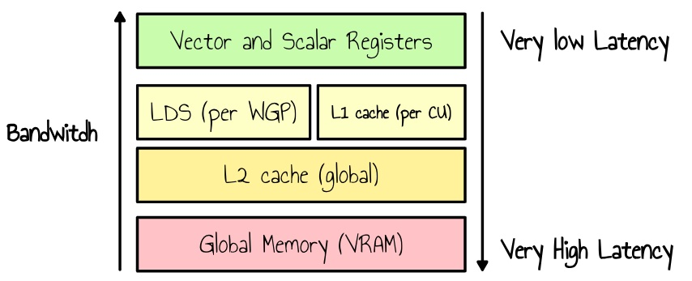
Figure 6: simplified representation of the memory hierarchy
Since the LDS has a much smaller capacity than global memory, we need to use tiling to divide our problem into smaller sub-matrix multiplications. One way to facilitate this is to restructure the computation by moving the inner loop’s dot product to the outer loop. The key idea is to cache a column of matrix A and a row of matrix B, then perform the computation across the entire tile. This approach is more cache-efficient and significantly reduces memory access latency.
The pseudo code for our kernel 1 is :
for i from 0 to M - 1: # Loop over rows of A
for j from 0 to N - 1: # Loop over columns of B
sum = 0
for k from 0 to K - 1: # Loop over columns of A / rows of B
sum += A[i][k] * B[k][j]
end for
C[i][j] = sum
end for
end forIf we move the dot product to the outer loop, we have this :
for k from 0 to K - 1: # Outer loop over the shared dimension
for i from 0 to M - 1: # Loop over rows of A
for j from 0 to N - 1: # Loop over columns of B
C[i][j] += A[i][k] * B[k][j]
end for
end for
end forTiling in this form is straightforward: each workgroup operates on a tile and follows these steps: ( is the batch size, ie number of rows/columns we load to the LDS)
Init c to 0
While kId is less than N:
# Load A and B to Tile As and Bs
Load BK columns A to As
Load BK rows to Bs
Syncthreads
# Accumulate results using LDS
for k from 0 to BK
c += As[threadIdx.y][k] * Bs[k][threadIdx.x]
Syncthreads
Increment kId by BK
end for
c[row][col]=cIf we choose a tile size of 32x32 and , our new kernel looks like this:
#define TILE_SIZE 32
__global__ void kernel2_lds(const float *A, const float *B, float *C, int N)
{
__shared__ float As[TILE_SIZE][TILE_SIZE];
__shared__ float Bs[TILE_SIZE][TILE_SIZE];
int row = blockIdx.y * TILE_SIZE + threadIdx.y;
int col = blockIdx.x * TILE_SIZE + threadIdx.x;
float sum = 0.0f;
for (int t = 0; t < N; t += TILE_SIZE)
{
Bs[threadIdx.y][threadIdx.x] = B[N * (threadIdx.y + t) + col];
As[threadIdx.y][threadIdx.x] = A[N * row + t + threadIdx.x];
__syncthreads();
for (int k = 0; k < TILE_SIZE; k++)
{
sum += As[threadIdx.y][k] * Bs[k][threadIdx.x];
}
__syncthreads();
}
if (row < N && col < N)
{
C[row * N + col] = sum;
}
}__syncthreads(); is required here to ensure that all threads in the workgroup can see the data loaded into the LDS and to synchronize before any updates are made to the data.
We also ensure that the contents of both matrices A and B are loaded into the LDS by rows rather than columns to avoid uncoalesced memory accesses. Indeed, if we were to read by columns, each thread in a wave would access a non-contiguous memory region, resulting in multiple separate transactions and reduced efficiency as shown in the 2 diagrams below.
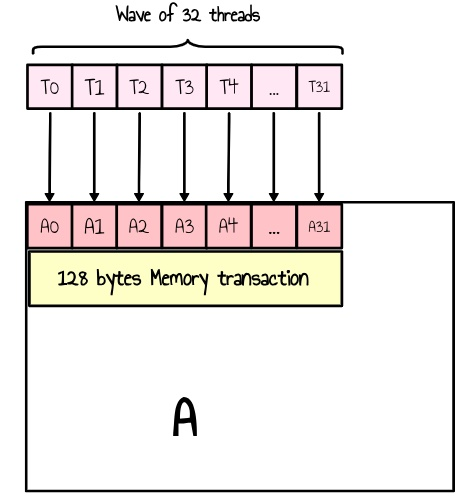
Figure 7: coalesced loads for matrix A. A single 128 bytes memory transaction for all threads
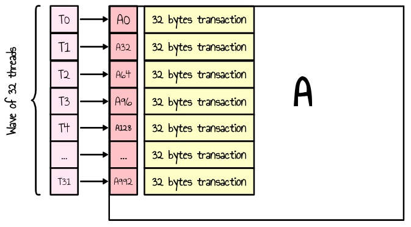
Figure 8: non coalesced loads for matrix A. Multiple 32 bytes memory transactions for a single wave
From the ISA guide, device memory is accessed through 32-, 64-, or 128-byte transactions, which must be naturally aligned. Maximizing memory throughput requires coalescing memory accesses across threads within a wave to minimize the number of transactions 5.
The performance for this kernel is 34.2 ms (4017 GFlops/s). 4 times faster than our naive kernel !
| Kernel # | Description | Time (ms) | Performance (GFLOPS) | Relative Performance to rocBLAS |
|---|---|---|---|---|
| Kernel 0 | rocBLAS | 4.4992 | 30547.4 | 100.0 % |
| Kernel 1 | Naive version | 136.006 | 1010.54 | 3.3 % |
| Kernel 2 | LDS tiling | 34.2059 | 4017.99 | 13.1 % |
Let’s use RGP to understand what is going on.
Our occupancy is pretty good (100 %) but our VALU utilization is only 15%.
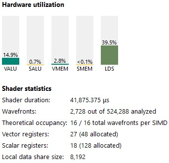
Figure 9 : stats taken from the instruction tab in RGP
If we look at the ISA in the instruction timing tab, we see a couple of interesting things :
- the inner loop has been unrolled
- we are not using v_dual_fmac_f32, only v_fmac_f32 just like rocBLAS
- we get a consistent 90 cycles stall (not hidden) on these LDS loads (check the s_waitcnt lgkmcnt(X) instructions)
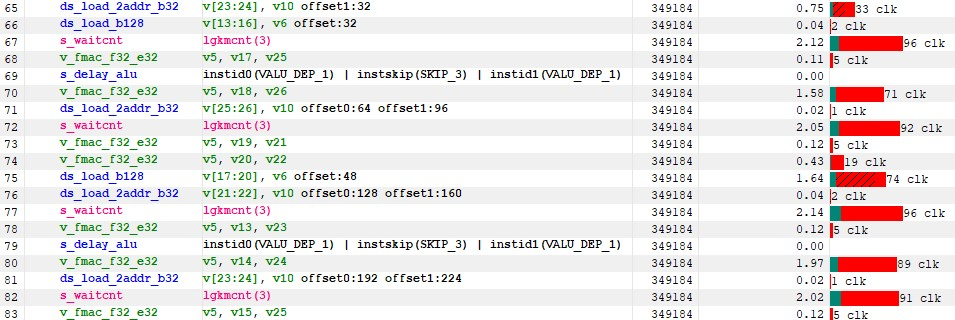
Figure 10 : instruction timing
To understand what is happening, we need to quickly explain how SIMD scheduling works. During each clock cycle, the SIMD selects an instruction from a pool of wave to issue. A SIMD can manage up to 16 wavefronts in parallel. When we refer to occupancy, we are actually talking about the ratio of active wave to the theoretical maximum number of wave that a SIMD can support. The more active wavefronts there are, the greater the likelihood that the SIMD can switch between wave, increasing the chances of hiding latency within individual wavefronts.6
If we go back to our case, we are likely having something like this :
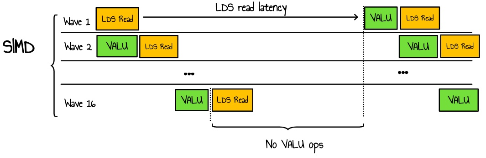
Figure 11 : wavefront scheduling within a SIMD
Here, we have a high-occupancy kernel launching many waves in parallel, all contending for access to the LDS. Since the time taken by our VALU operations is shorter than the LDS latency, the latency cannot be hidden, even with additional threads. This results in both LDS bandwidth congestion and resource waste due to latency.
One way to address this issue is by increasing the arithmetic intensity of our kernel, ensuring that the VALU operations per wave take longer than the LDS memory reads.
Kernel 3 : Register tiling
Now, we want to increase the arithmetic complexity of our kernel. This means having each thread perform more computations. Essentially, we aim to increase the ratio of computation to data read. One way to achieve this is to compute a small output tile per thread—for example, an 8x8 tile. To do this, we introduce an additional level of tiling.
Each thread will be responsible for producing a small tile of the output matrix. We can cache the contents of matrices and into registers to enable very low-latency access. However, registers are limited on the GPU, with 1536 VGPRs (Vector General-Purpose Registers) available per SIMD and a maximum of 256 registers per kernel. Increasing register usage means we won’t be able to launch as many waves per SIMD, effectively reducing occupancy. However, this shouldn’t be an issue if we can maximize utilization of the SIMD’s VALUs (Vector Arithmetic Logic Units) with just a few waves.
Now, let’s look at the different levels of tiling:
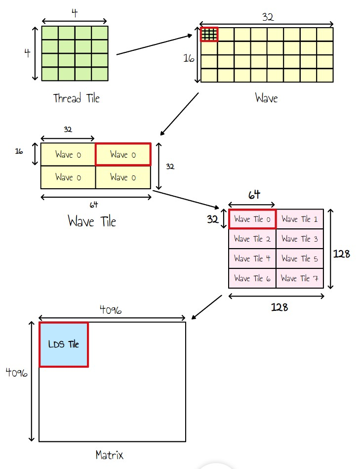
Figure 12 : tiling levels
- Each thread now outputs a 4x4 block (Thread Tile).
- Since a wave consists of 32 threads, we organize them into a 8x4 block, making a single wave responsible for outputting a 32×16 tile.
- Given that we have 256 threads per workgroup (i.e., 8 waves), we arrange them into a 2×4 grid of Wave Tiles.
- Each wave iterates over a 2x2 grid to cover the entire Wave Tile.
Essentially, it means each thread will now be responsible to compute a 8x8 output tile.
Our kernel parameters looks like this:
#define BLOCK_SIZE 256
// Block Tile size
constexpr int BN = 128;
constexpr int BM = 128;
// Number of Row or column we read per batch
constexpr int BK = 8;
// Thread Tile size . 4x4
constexpr int TN = 4;
constexpr int TM = 4;
// A wave is a block of 8x4 of the output matrix
constexpr int nbThreadXPerWave = 8;
constexpr int nbThreadYPerWave = 4;
// Number of waves in a block
constexpr int nbWavesPerBlock = BLOCK_SIZE / 32;
constexpr int WN = 64;
constexpr int WM = BN * BM / nbWavesPerBlock / WN;
constexpr int nbIterWaveN = WN / (nbThreadXPerWave * TN);
constexpr int nbIterWaveM = WM / (nbThreadYPerWave * TM);
// LDS Tile
__shared__ float As[BK][BM];
__shared__ float Bs[BK][BN];
// Column and row from A and B, stored into registers
float A_col[nbIterWaveM * TM];
float B_row[nbIterWaveN * TN];
//Wave Tile (registers)
float C_regs[TM * nbIterWaveM * TN * nbIterWaveN] = {0.0f};The pseudo code for our new kernel:
Initialize kId to 0
While kId is less than N:
# Loading Tile to LDS
Load BK columns from A to As
Load BK rows from B to Bs
Syncthreads
For k from 0 to BK - 1 do:
Load col k of As to A_col
Load row k of Bs to B_row
# Wave Tile
For idY from 0 to nbIterWaveM:
For idX from 0 to nbIterWaveN:
# Thread Tile
For i from 0 to TM:
For j from 0 to TN:
x = idX * TN + j;
y = idY * TM + i;
C_regs[y][x] = A_col[y] * B_row[x]
Syncthreads
Increment kId by BK
Write C_regs to CFull kernel source code can be found here
The performance for this kernel is 6.03 ms (22777 GFlops/s), 5 times faster than our previous kernel !
| Kernel # | Description | Time (ms) | Performance (GFLOPS) | Relative Performance to rocBLAS |
|---|---|---|---|---|
| Kernel 0 | rocBLAS | 4.4992 | 30547.4 | 100.0 % |
| Kernel 1 | Naive version | 136.006 | 1010.54 | 3.3 % |
| Kernel 2 | LDS tiling | 34.2059 | 4017.99 | 13.1 % |
| Kernel 3 | Register tiling | 6.0341 | 22777.0 | 74.6 % |
We have a lower occupancy but VALU utilization has significantly increased.
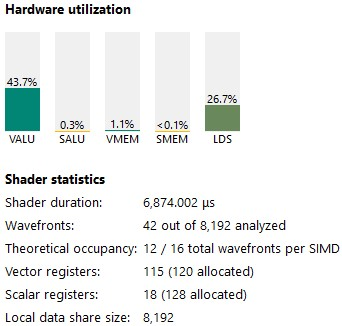
Figure 13 : kernel 3 stats
The ISA looks good. We now have a lot of v_dual_fmac instructions—exactly what we wanted, even though some are still single fma.
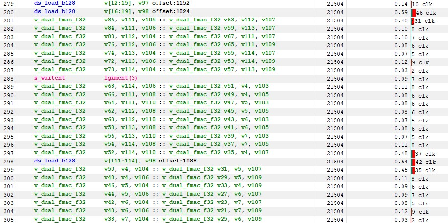
Figure 14 : kernel 3 instruction timing
Even though this is a significant improvement over Kernel 2, we can still see that we are waiting for the LDS. This is especially true for the first batch of ds_load instructions, where we observe more than 100 clock cycles of cumulative non-hidden latency as seen below :
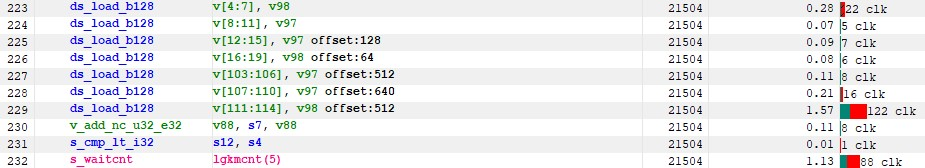
Figure 15 : ds_load instructions latencies
Before diving into this, we need to first improve the way we read from global memory. According to RGP, this is now the biggest bottleneck in terms of performance.
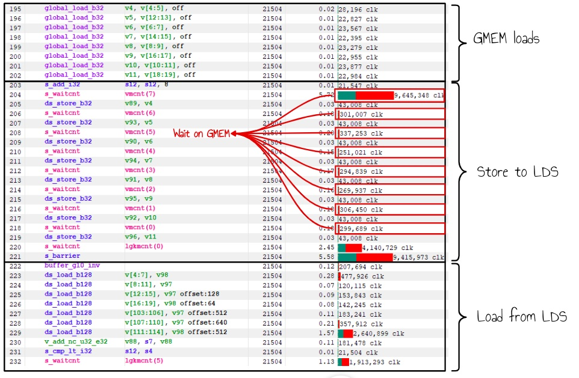
Figure 16 : gmem wait latency
Our cumulative latency for global memory waits exceeds 12 million clock cycles, which is four times more than the LDS load wait in the inner loop.
To further optimize performance, we will focus on better hiding the Global memory read latency.
Kernel 4 : GMEM double buffering
With our current implementation, every wave must wait for global memory and then LDS write latency before doing any work. In a high-occupancy scenario, this shouldn’t be an issue if the GPU can find other waves to hide this latency. However, in practice, we often have multiple waves in the same state running simultaneously because we use a sync thread before and after reading from global memory.
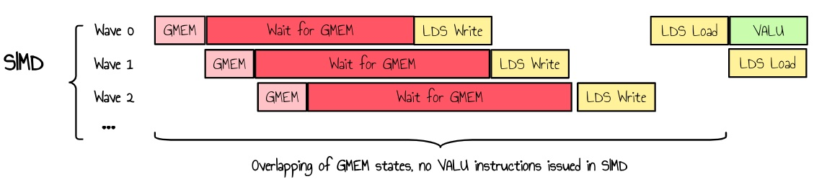
Figure 17 : several waves waiting for GMEM loads
One way to mitigate this is by using double buffering. We could allocate twice the memory and perform reads and writes to the LDS in parallel.
Alternatively, we could use intermediate registers to load data from global memory while working on the LDS, only writing to LDS just before it is needed. This ensures no waiting on global memory.
I prefer this approach for now, as I don’t want to introduce additional LDS pressure in the inner loop just yet.
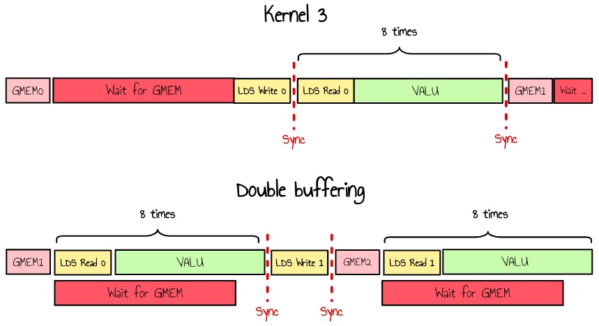
Figure 18 : double buffering on GMEM loads
If we update our pseudo code, we now have :
Initialize kId to 0
# Load first batch before loop
Load BK columns from A to As
Load BK rows from B to Bs
Syncthreads
While kId is less than N:
# Loading Tile to LDS
Load BK columns from A to A_TMP (no wait)
Load BK rows from B to B_TMP (no wait)
For k from 0 to BK - 1 do:
Load col k of As to A_col
Load row k of Bs to B_row
# Wave Tile
For idY from 0 to nbIterWaveM:
For idX from 0 to nbIterWaveN:
# Thread Tile
For i from 0 to TM:
For j from 0 to TN:
x = idX * TN + j;
y = idY * TM + i;
C_regs[y][x] = A_col[y] * B_row[x]
Syncthreads
Save A_TMP and B_TMP to As and Bs
Syncthreads
Increment kId by BK
Write C_regs to CTo my surprise, the performance for this kernel decreased to 14.3032 ms (9612.48 GFLOPS), more than 2 times slower than kernel 3 !
Our double buffering algorithm utilizes more registers and reduces occupancy. After inspecting the ISA in RGP, we see that the HIP compiler attempts to keep register usage low by using scratch memory instead—which is detrimental to performance7.
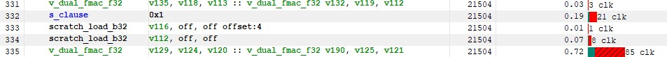
Figure 19 : scratch_load instructions introduced to reduce register usage
Unfortunately, we cannot directly set the maximum number of registers per kernel in HIP (which is theoretically 256). However, we can use the launch_bounds extension to provide hints to the compiler.
With this change, the performance is back to normal : 5.37 ms (25559.6 GFLOP/s).
Full kernel source code can be found here
| Kernel # | Description | Time (ms) | Performance (GFLOPS) | Relative Performance to rocBLAS |
|---|---|---|---|---|
| Kernel 0 | rocBLAS | 4.4992 | 30547.4 | 100.0 % |
| Kernel 1 | Naive version | 136.006 | 1010.54 | 3.3 % |
| Kernel 2 | LDS tiling | 34.2059 | 4017.99 | 13.1 % |
| Kernel 3 | Register tiling | 6.0341 | 22777.0 | 74.6 % |
| Kernel 4 | GMEM Double buffer | 5.3772 | 25559.6 | 83.7% |
VALU utilization has increased from 43 % to 52 %.
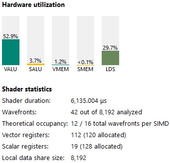
Figure 20 : kernel 4 stats
We can now go back to our LDS loads in the inner loop which have become the new bottleneck, as shown below.
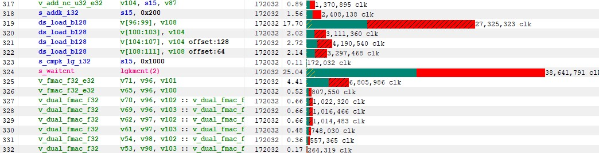
Figure 21 : latency on LDS loads
Kernel 5 : Optimize LDS usage
One thing I didn’t look at in previous kernels is whether or not we had bank conflicts on the LDS. This information is actually not easily accessible in RGP. If we look at ISA section where we write to the LDS, we see that the latency are unexpectly high.
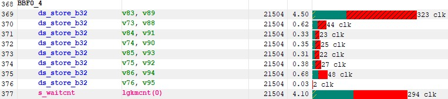
Figure 22 : latencies on LDS writes
According the RDNA3 programming guide, the LDS memory is split into 64 banks of DWORD-wide RAMS. These 64 banks are further sub-divided into two sets of 32-banks each where 32 of the banks are affiliated with a pair of SIMD32’s, and the other 32 banks are affiliated with the other pair of SIMD32’s within the WGP. Each bank is a 512x32 two-port RAM (1R/1W per clock cycle). DWORDs are placed in the banks serially, but all banks can execute a store or load simultaneously.1
So, if threads within a wave access the same bank, the memory transactions will be serialized, which is exactly what happens when we write a column of matrix A to As.
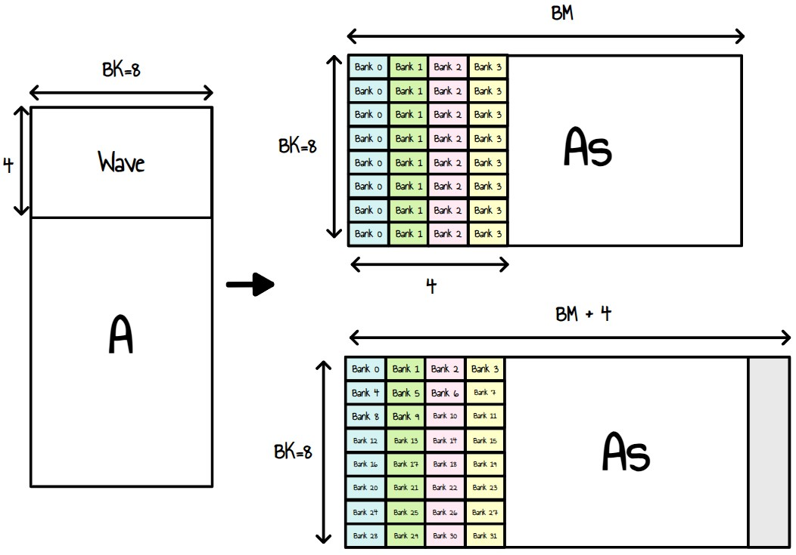
Figure 23 : Matrix A bank conflicts and how to remove them
Our current kernel reads the content of matrix A rows by rows to avoid uncoalesced memory loads. Given we then operates on columns of matrix A, we transpose matrix A into matrix As so that each line of As correspond to a tile column of A.
Now, if we look at how this work is mapped to waves, we see that we essentially write 8 times to 4 consecutive banks within each wave. One way to fix this is to add a padding of 4 elements to our LDS matrix, As.
__shared__ float As[BK][BM+4]; // 4 padding to avoid bank conflicts
Doing another RGP capture with this change:
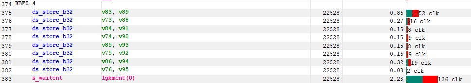
Figure 24 : updated latency with padding
LDS latency has decreased a lot and our VALU utilization is now 62.3%.
However are kernel is still bound by these LDS loads. Let’s do some napkin math and check whether or not we are not reaching the limit of the LDS bandwidth.
As said before, each pair of SIMD has a 32-banks memory capable of reading DWORD. Our theoritical bandwidth should something like this:
Now, let’s analyze what our current algorithm does:
- Each thread reads 8 DWORDS per matrix per iteration (equivalent Thread tile of 8x8)
- A wave read 32x8x2 DWORDS in total
- Our workgroup has 8 waves, so it’s 4096 reads per iteration.
- Given we have 4096 iterations, we read 4096x4096x4 bytes per workgroup.
- With 32x32 workgroup, that’s 68719476736 bytes in total.
That’s for reading. We also write to the LDS : 4096x128x32x32x4x2 = 4294967296 bytes.
With our current execution time of 5.37 ms, the required LDS bandwidth is roughly 13.56 TBytes/s. This is less than 46% of the maximum capacity, but it is highly likely that our kernel experiences congestion in the LDS when multiple waves attempt to read or write simultaneously.
To mitigate this, we can try these 2 things :
- enable CU mode
- increase our arithmetic intensity again to trade LDS reads vs GMEM reads
According the RDNA3 programming guide, the LDS can operate on 2 distincts mode : WGP Mode and CU mode. HIP usse by default WGP mode. In WGP mode, the LDS is one large contiguous memory that all waves on the WGP can access meaning we are more likely to get congestion on the LDS. In CU mode, the LDS is effectively split into a separate upper and lower LDS, each serving two SIMD32’s. Waves are allocated LDS space within the half of LDS which is associated with the SIMD the wave is running on. By enabling the CU mode, we should reduce the probability of wave contending for the LDS8
Second thing we can try is to increase our Thread tile to 16x8 instead of 8x8. This will improve the computation-to-data-read ratio. It should still fit within the 256 VGPR budget we have for the kernel and reduce our bandwidth requirements to 10.3 TBytes/s
With all these changes, the performance for this kernel is now 4.09 ms (33526 GFLOP/s). That’s better than rocBLAS !
Full kernel source code can be found here
| Kernel # | Description | Time (ms) | Performance (GFLOPS) | Relative Performance to rocBLAS |
|---|---|---|---|---|
| Kernel 0 | rocBLAS | 4.4992 | 30547.4 | 100.0 % |
| Kernel 1 | Naive version | 136.006 | 1010.54 | 3.3 % |
| Kernel 2 | LDS tiling | 34.2059 | 4017.99 | 13.1 % |
| Kernel 3 | Register tiling | 6.0341 | 22777.0 | 74.6 % |
| Kernel 4 | GMEM Double buffer | 5.3772 | 25559.6 | 83.7% |
| Kernel 5 | LDS Utilization Optimization | 4.0994 | 33526.6 | 109.8 % |
We continue increasing VALU utilization, and now our kernel has doubled in register usage (which makes sense, as we have doubled our register space requirements). Even though occupancy is low, overall performance is better because we are making better use of the VALU units.
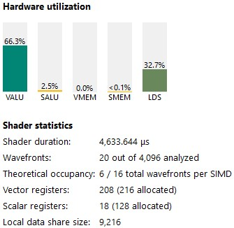
Figure 25 : kernel 5 stats
If we look at the ISA, we now have a small LDS latency of less than 30 cycles and most of it is hidden.
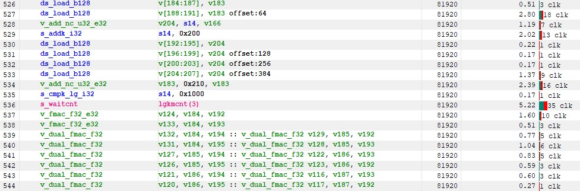
Figure 26 : kernel 5 instruction timing
OK, so our kernel outperforms rocBLAS, but since we are using dual_fmac instructions, the performance is still not as high as we would expect.
At this point, I tried several optimizations, but I struggled to get the HIP compiler to generate the code I wanted. Even small changes to the C++ code drastically altered the generated ISA, making optimization work very difficult. This was especially problematic with inline assembly, where the compiler would move instructions to incorrect locations due to a lack of explicit dependencies. Additionally, there is no way to manually assign specific VGPRs to particular instructions.
Because of these challenges, I decided to optimize directly at the ISA level, which is what we will focus on in the next steps.
Looking at RGP, one thing still puzzles me in the inner loop: the HIP compiler does not use dual_fmac instructions exclusively—we always see a few single FMA instructions mixed in. Another issue is that all the v_dual_fmac instructions have a minimum latency of 2–3 cycles. While this may seem insignificant, it adds up across all instructions and impacts overall performance at our current execution speed.
Kernel 6 : VALU optimization
Before we go into the next optimizations, I need to be able to directly modify the ISA. To do so, I will now use the Module Management API so that we can load pre-compiled kernel code. Of course the idea is that we generate the ISA of our kernel from C++ once and then iterate on the ISA for any further version.
To do so, I need to extract the ISA source file from my current C++ kernel and ask hip to build hsaco binary format:
hipcc --genco --offload-arch=gfx1100 kernel5_lds_optim.cpp -mcumode --save-temps -o tmp.hsaco
The --save-tempsparameter will allow us to have access to the intermediate .s file containing the ISA.
HIP should produce these files:
kernel5_lds_optim-hip-amdgcn-amd-amdhsa-gfx1100.bc kernel5_lds_optim-hip-amdgcn-amd-amdhsa-gfx1100.hipi kernel5_lds_optim-hip-amdgcn-amd-amdhsa-gfx1100.o kernel5_lds_optim-hip-amdgcn-amd-amdhsa-gfx1100.out kernel5_lds_optim-hip-amdgcn-amd-amdhsa-gfx1100.out.resolution.txt kernel5_lds_optim-hip-amdgcn-amd-amdhsa-gfx1100.s
kernel5_lds_optim-hip-amdgcn-amd-amdhsa-gfx1100.s is our guy.
Now we can take this file as a basis for our modifications and assemble it with the commands :
hipcc -target amdgcn-amd-amdhsa -mcpu=gfx1100 -mcumode -c kernel_modified.s -o kernel.o ld.lld -shared kernel.o -o kernel.hsaco
The kernel.hsacofile can then be loaded at runtime using the Module Management API of HIP.
Direct control over the ISA is great for micro-benchmarking and makes it easier to instrument the code for performance assessment without worrying about unexpected compiler optimizations.
For example, I tried duplicating our dual_fmac instructions 32 times in the inner loop to see if we could artificially become VALU-bound. However, it turns out that our VALU utilization cannot exceed 75%!
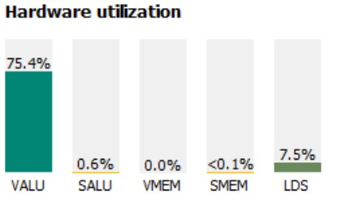
Figure 27 : Fake kernel with 32x more VALU operations
Next thing I tried is to launch a single workgroup and have a single wave running. It turns out these 2-3 clocks latency are still there meaning it must comes from the VGPR distribution of these dual_fmac instructions.
Ok, so let’s take a closer look at these dual instructions and see if we can do something about it. Dual instructions are of that form :
OpCodeX DSTX, SRCX0, SRCX1 :: OpCodeY DSTY, SRCY0, SRCY1
In our case :
v_dual_fmac_f32 DSTX, SRCX0, SRCX1 :: v_dual_fmac_f32 DSTY, SRCY0, SRCY1
The two instructions are executed at the same time, so there are no races between them if one reads a VGPR and the other writes the same VGPR. The ‘read’ gets the old value.
There are a number of constrains in order to use these instructions. Namely:
- The instructions must be independent of each other
- SRCX0 and SRCY0 must use different VGPR banks
- Dest VGPRs: one must be even and the other odd
- VSRCX1 and VSRCY1 must use different banks
On top of that, the RDNA 3 programming guide states :
- There are 4 VGPR banks (indexed by SRC[1:0]), and each bank has a cache.
- Each cache has 3 read ports: one dedicated to SRC0, one dedicated to SRC1 and one for SRC2.
- A cache can read all 3 of them at once, but it can’t read two SRC0’s at once (or SRC1/2).
- FMAC_F32 uses SRC2 as destination operand
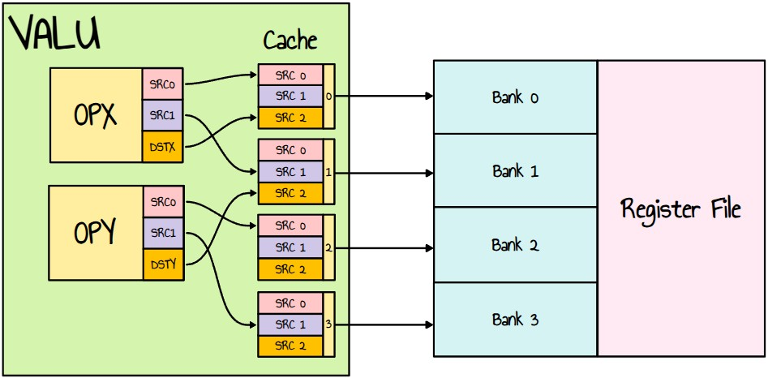
Figure 28 : my visualization of register banks and dual instructions. Example of an instruction using bank 0,1,2,3
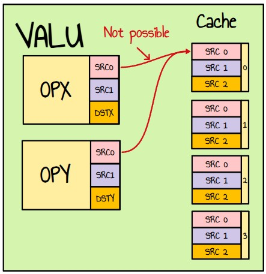
Figure 29 : SRCX0 and SRCY0 must use different banks
Bank number of register is given by
Taking a example:
v_dual_fmac_f32 v10, v189, v207 :: v_dual_fmac_f32 v9, v190, v20
FMAC Bank2, Bank1, Bank3 :: FMAC Bank1, Bank2, Bank0
With this instruction, we are reading the 4 different banks in parallel and writing to bank 1 and 2 the next cycle. In practice we could read from the same bank in both OPX and OPY if it’s not using the same operand. For example this is valid given that SRCX0 and SRCY0 use different banks :
v_dual_fmac_f32 v123, v139, v144 :: v_dual_fmac_f32 v114, v140, v143
FMAC Bank3, Bank3, Bank0 :: FMAC Bank2, Bank0, Bank3
Both instructions are reading the same banks (0 & 3). The way I see it (that’s not covered in the ISA guide AFAIK), 2 things could happen here :
- at least one of the VGPRs was already present in the cache meaning the instruction would have to fetch at most one value from the register file
- the VALU has to access 2 VGPRs on the same bank leading to a bank conflict and some stall latency.
On top of that, we also need to take into account the VGPRs we are writing to even though we write on the next cycle.
So, even though we may have a valid VGPR distribution that successfully compiles, we could still encounter register bank conflicts, impacting performance.
Let’s take a look at what the HIP compiler has generated for us.
v_dual_fmac_f32 v127, v138, v144 :: v_dual_fmac_f32 v122, v139, v143 v_dual_fmac_f32 v128, v138, v145 :: v_dual_fmac_f32 v121, v139, v142 v_dual_fmac_f32 v123, v139, v144 :: v_dual_fmac_f32 v114, v140, v143 v_dual_fmac_f32 v124, v139, v145 :: v_dual_fmac_f32 v113, v140, v142 v_dual_fmac_f32 v115, v140, v144 :: v_dual_fmac_f32 v110, v141, v143 v_dual_fmac_f32 v116, v140, v145 :: v_dual_fmac_f32 v109, v141, v142 v_dual_fmac_f32 v111, v141, v144 :: v_dual_fmac_f32 v90, v138, v147 v_dual_fmac_f32 v112, v141, v145 :: v_dual_fmac_f32 v89, v138, v146 v_dual_fmac_f32 v91, v138, v148 :: v_dual_fmac_f32 v94, v139, v147 v_dual_fmac_f32 v92, v138, v149 :: v_dual_fmac_f32 v93, v139, v146 v_dual_fmac_f32 v95, v139, v148 :: v_dual_fmac_f32 v98, v140, v147 v_dual_fmac_f32 v96, v139, v149 :: v_dual_fmac_f32 v97, v140, v146 v_dual_fmac_f32 v99, v140, v148 :: v_dual_fmac_f32 v118, v141, v147 v_dual_fmac_f32 v100, v140, v149 :: v_dual_fmac_f32 v117, v141, v146 v_dual_fmac_f32 v119, v141, v148 :: v_dual_fmac_f32 v70, v138, v151 v_dual_fmac_f32 v120, v141, v149 :: v_dual_fmac_f32 v69, v138, v150 ;...
If we analyse both the banks and the cache state for the first instructions, we get something like this:
| DSTX | SRC0X | SRC1X | DSTY | SRC0Y | SRC1Y |
|---|---|---|---|---|---|
| R2 | R0 | R3 | R3 | ||
| W3 | Cache2 | R1 | W2 | Cache3 | R2 |
| W0 | Cache3 | Cache0 | W1 | R0 | Cache3 |
| W3 | Cache3 | Cache1 | W2 | Cache0 | Cache2 |
| W0 | Cache0 | Cache0 | W1 | R1 | Cache3 |
| W3 | Cache0 | Cache1 | W2 | Cache1 | Cache2 |
| W0 | Cache1 | Cache0 | W1 | Cache2 | R3 |
| W3 | Cache1 | Cache1 | W2 | Cache2 | R2 |
| W0 | Cache2 | R0 | W1 | Cache3 | Cache3 |
| W3 | Cache2 | R1 | W2 | Cache3 | Cache2 |
| W0 | Cache3 | Cache0 | W1 | Cache0 | Cache3 |
| W3 | Cache3 | Cache1 | W2 | Cache0 | Cache2 |
| W0 | Cache0 | Cache0 | W1 | Cache1 | Cache3 |
| W3 | Cache0 | Cache1 | W2 | Cache1 | Cache2 |
| W0 | Cache1 | Cache0 | W1 | Cache2 | R3 |
| W3 | Cache1 | Cache1 | W2 | Cache2 | R2 |
- R{k} means we read from bank k
- W{k} means we write to bank k
- Cache{k} means we read from one of the cache associated with bank k
I assumed that writes are performed with a 1-clock delay, which is why the first row of DSTX and DSTY is empty.
We can see that the compiler does a great job of reusing the cache, as we only read a small amount of data. However, the access pattern is not consistent over time, and we often use the same bank more than twice.
I started creating microbenchmarks to understand the latencies displayed in RGP based on different access patterns in terms of VGPR banks. However, this turned out to be quite complex, likely due to the underlying architecture’s complexity.
Instead of spending too much time on this, I tried to design an implementation following these principles:
- Write to all VGPR banks in a continuous pattern
- Maximize the number of different VGPR banks we read from per instruction.
- Maximize the use of the VGPR caches
- Maintain a single, consistent access pattern and aim for as much symmetry as possible.
The good news is that we can ignore alignment constraints on the output matrix C, given that the number of iterations in the inner loop is quite high. In other words, we can freely shuffle register allocations during the accumulation phase and reorder them only once before writing to memory. This effectively removes one constraint, as we no longer need to maintain a direct mapping between contiguous memory locations and contiguous registers. This might be the reason the HIP compiler was struggling to only use dual_fmac instructions (write of matrix C_reg to C by global_store_b128 requires 4 consecutive VGPRs)
Since kernel 4, our inner loop consist of doing the multiplication between the 8 elements of a column of A and the 16 elements of a row of B. We can assume both A and B is contiguously distributed on the 4 different VGPR banks. Something like this :
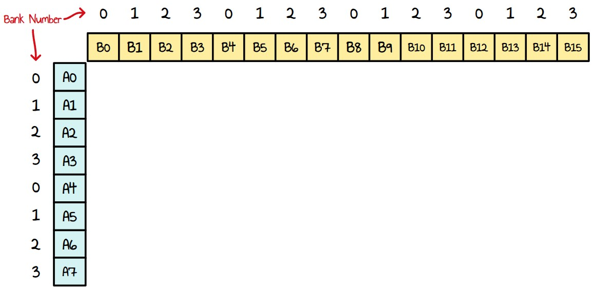
Figure 30 : inner loop - product between A_col and B_row
For the sake of simplicity, I will only represent the algorithm on a 8x4 tile from now on. A naive approach is to create a dual instructions by shifting a small diagonal like this making sure both SRC0s & SRC1 use different banks.
Figure 31 : naive distribution
The cell number represents the instruction index.
We see it is perfectly doable to only use dual issue instructions however some of them are using multiple times the same banks. This is something we wanted to avoid. One way to get rid of this is to store A and B on a set of non-overlapping banks. For example B only on bank 0-1 and A on bank 2-3. The issue with this is that we won’t be able to use ds_load_b128 instruction anymore as they target a 4 consecutive VGPRs. So instead of having 6 ds_load_b128 instructions like we have now, we will have 12 ds_load_b64 instead. If the performance uplift from our change is good enough, it shouldn’t matter.
Figure 32 : separate banks between A and B
All green ! However if we look at the cache use and the read pattern, we have this :
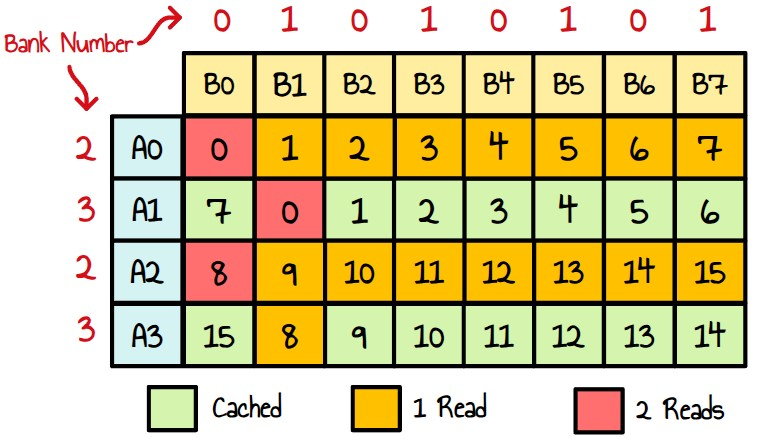
Figure 33 : Cache usage per instruction
We have good reuse of the values from A, although instruction 8 performs two reads. However, if we look at the read pattern in the detailed table below, we can see that we mostly read from bank 0 and bank 1, and from instruction Y (which is not as symmetrical as we would like it to be)
| DSTX | SRC0X | SRC1X | DSTY | SRC0Y | SRC1Y |
|---|---|---|---|---|---|
| R0 | R2 | R1 | R3 | ||
| W1 | Cache1 | Cache2 | W2 | R0 | Cache3 |
| W3 | Cache0 | Cache2 | W0 | R1 | Cache3 |
| W1 | Cache1 | Cache2 | W2 | R0 | Cache3 |
| W3 | Cache0 | Cache2 | W0 | R1 | Cache3 |
| W1 | Cache1 | Cache2 | W2 | R0 | Cache3 |
| W3 | Cache0 | Cache2 | W0 | R1 | Cache3 |
| W1 | Cache1 | Cache2 | W2 | R0 | Cache3 |
| W3 | Cache0 | R2 | W0 | R1 | R3 |
| W1 | Cache1 | Cache2 | W2 | R0 | Cache3 |
| W3 | Cache0 | Cache2 | W0 | R1 | Cache3 |
| W1 | Cache1 | Cache2 | W2 | R0 | Cache3 |
| W3 | Cache0 | Cache2 | W0 | R1 | Cache3 |
| W1 | Cache1 | Cache2 | W2 | R0 | Cache3 |
| W3 | Cache0 | Cache2 | W0 | R1 | Cache3 |
| W1 | Cache1 | Cache2 | W2 | R0 | Cache3 |
Instead of iterating over the values of A alone, we could iterate over both A and B, swapping registers between instructions X and Y to maximize cache usage
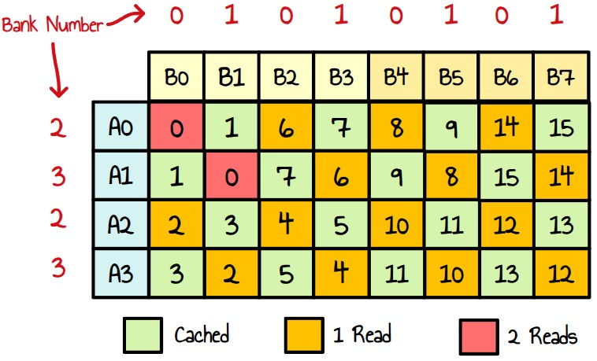
Figure 34 : Optimal solution
Looking at the detailed view, we now have a nice and symetrical access pattern. Both instruction X and Y read the same amount of data from the register file and we iterate over the 4 banks in sequential way (not just bank 0 and 1)
| DSTX | SRC0X | SRC1X | DSTY | SRC0Y | SRC1Y |
|---|---|---|---|---|---|
| R0 | R2 | R1 | R3 | ||
| W1 | Cache0 | Cache3 | W2 | Cache1 | Cache2 |
| W3 | Cache0 | R2 | W0 | Cache1 | R3 |
| W1 | Cache1 | Cache2 | W2 | Cache0 | Cache3 |
| W3 | R0 | Cache2 | W0 | R1 | Cache3 |
| W1 | Cache0 | Cache3 | W2 | Cache1 | Cache2 |
| W3 | Cache0 | R2 | W0 | Cache1 | R3 |
| W1 | Cache1 | Cache2 | W2 | Cache0 | Cache3 |
| W3 | R0 | Cache2 | W0 | R1 | Cache3 |
| W1 | Cache0 | Cache3 | W2 | Cache1 | Cache2 |
| W3 | Cache0 | R2 | W0 | Cache1 | R3 |
| W1 | Cache1 | Cache2 | W2 | Cache0 | Cache3 |
| W3 | R0 | Cache2 | W0 | R1 | Cache3 |
| W1 | Cache0 | Cache3 | W2 | Cache1 | Cache2 |
| W3 | Cache0 | R2 | W0 | Cache1 | R3 |
| W1 | Cache1 | Cache2 | W2 | Cache0 | Cache3 |
Right, now we are happy with our new access pattern how can we apply this change to the code ? Here are the steps:
- List the VGPRs used by the current code.
- Re-distribute these VGPRs to:
- Ensure C_regs occupy a continuous segment of banks.
- Assign A_col and B_row to non-overlapping bank sets (e.g., banks 0-1 and banks 2-3).
- Re-implement LDS loads for A_col and B_row.
- Re-write the inner loop (128 v_dual_fmac instructions).
- Restore the VGPR mapping after the loop to maintain compatibility with the existing code for writing to global memory.
List the VGPRs used
Let’s start with the ds_load_b128instructions:
ds_load_b128 v[184:187], v183 ds_load_b128 v[188:191], v183 offset:64 ds_load_b128 v[192:195], v204 ds_load_b128 v[196:199], v204 offset:128 ds_load_b128 v[200:203], v204 offset:256 ds_load_b128 v[204:207], v204 offset:384
The first 2 instructions are responsible for loading A.
- v183 is the LDS address of As
- VGPR are used to save As
- v204 is the LDS address of Bs
- VGPR are used to save Bs.
If we look at the fma instructions now :
v_fmac_f32_e32 v124, v184, v192 v_fmac_f32_e32 v133, v184, v193 v_dual_fmac_f32 v132, v184, v194 :: v_dual_fmac_f32 v129, v185, v192 v_dual_fmac_f32 v131, v184, v195 :: v_dual_fmac_f32 v128, v185, v193 v_dual_fmac_f32 v127, v185, v194 :: v_dual_fmac_f32 v122, v186, v193 v_dual_fmac_f32 v126, v185, v195 :: v_dual_fmac_f32 v123, v186, v192 v_dual_fmac_f32 v121, v186, v194 :: v_dual_fmac_f32 v116, v187, v193 v_dual_fmac_f32 v120, v186, v195 :: v_dual_fmac_f32 v117, v187, v192 v_dual_fmac_f32 v115, v187, v194 :: v_dual_fmac_f32 v112, v184, v197 v_dual_fmac_f32 v114, v187, v195 :: v_dual_fmac_f32 v113, v184, v196 v_dual_fmac_f32 v111, v184, v198 :: v_dual_fmac_f32 v108, v185, v197 v_dual_fmac_f32 v110, v184, v199 :: v_dual_fmac_f32 v109, v185, v196 v_dual_fmac_f32 v107, v185, v198 :: v_dual_fmac_f32 v104, v186, v197 v_dual_fmac_f32 v106, v185, v199 :: v_dual_fmac_f32 v105, v186, v196 v_dual_fmac_f32 v103, v186, v198 :: v_dual_fmac_f32 v100, v187, v197 v_dual_fmac_f32 v102, v186, v199 :: v_dual_fmac_f32 v101, v187, v196 v_dual_fmac_f32 v99, v187, v198 :: v_dual_fmac_f32 v96, v184, v201 v_dual_fmac_f32 v98, v187, v199 :: v_dual_fmac_f32 v97, v184, v200 v_dual_fmac_f32 v95, v184, v202 :: v_dual_fmac_f32 v92, v185, v201 v_dual_fmac_f32 v94, v184, v203 :: v_dual_fmac_f32 v93, v185, v200 v_dual_fmac_f32 v91, v185, v202 :: v_dual_fmac_f32 v88, v186, v201 v_dual_fmac_f32 v90, v185, v203 :: v_dual_fmac_f32 v89, v186, v200 v_dual_fmac_f32 v87, v186, v202 :: v_dual_fmac_f32 v84, v187, v201 v_dual_fmac_f32 v86, v186, v203 :: v_dual_fmac_f32 v85, v187, v200 v_dual_fmac_f32 v83, v187, v202 :: v_dual_fmac_f32 v80, v184, v205 v_dual_fmac_f32 v82, v187, v203 :: v_dual_fmac_f32 v81, v184, v204 v_dual_fmac_f32 v79, v184, v206 :: v_dual_fmac_f32 v76, v185, v205 v_dual_fmac_f32 v78, v184, v207 :: v_dual_fmac_f32 v77, v185, v204 v_dual_fmac_f32 v75, v185, v206 :: v_dual_fmac_f32 v72, v186, v205 v_dual_fmac_f32 v74, v185, v207 :: v_dual_fmac_f32 v73, v186, v204 v_dual_fmac_f32 v71, v186, v206 :: v_dual_fmac_f32 v68, v187, v205 v_dual_fmac_f32 v70, v186, v207 :: v_dual_fmac_f32 v69, v187, v204 v_dual_fmac_f32 v67, v187, v206 :: v_dual_fmac_f32 v64, v188, v193 v_dual_fmac_f32 v66, v187, v207 :: v_dual_fmac_f32 v65, v188, v192 v_dual_fmac_f32 v63, v188, v194 :: v_dual_fmac_f32 v60, v189, v193 v_dual_fmac_f32 v62, v188, v195 :: v_dual_fmac_f32 v61, v189, v192 v_dual_fmac_f32 v59, v189, v194 :: v_dual_fmac_f32 v56, v190, v193 v_dual_fmac_f32 v58, v189, v195 :: v_dual_fmac_f32 v57, v190, v192 v_dual_fmac_f32 v55, v190, v194 :: v_dual_fmac_f32 v52, v191, v193 v_dual_fmac_f32 v54, v190, v195 :: v_dual_fmac_f32 v53, v191, v192 v_dual_fmac_f32 v51, v191, v194 :: v_dual_fmac_f32 v48, v188, v197 v_dual_fmac_f32 v50, v191, v195 :: v_dual_fmac_f32 v49, v188, v196 v_dual_fmac_f32 v47, v188, v198 :: v_dual_fmac_f32 v44, v189, v197 v_dual_fmac_f32 v46, v188, v199 :: v_dual_fmac_f32 v45, v189, v196 v_dual_fmac_f32 v43, v189, v198 :: v_dual_fmac_f32 v40, v190, v197 v_dual_fmac_f32 v42, v189, v199 :: v_dual_fmac_f32 v41, v190, v196 v_dual_fmac_f32 v39, v190, v198 :: v_dual_fmac_f32 v36, v191, v197 v_dual_fmac_f32 v38, v190, v199 :: v_dual_fmac_f32 v37, v191, v196 v_dual_fmac_f32 v35, v191, v198 :: v_dual_fmac_f32 v32, v188, v201 v_dual_fmac_f32 v34, v191, v199 :: v_dual_fmac_f32 v33, v188, v200 v_dual_fmac_f32 v31, v188, v202 :: v_dual_fmac_f32 v28, v189, v201 v_dual_fmac_f32 v30, v188, v203 :: v_dual_fmac_f32 v29, v189, v200 v_dual_fmac_f32 v27, v189, v202 :: v_dual_fmac_f32 v24, v190, v201 v_dual_fmac_f32 v26, v189, v203 :: v_dual_fmac_f32 v25, v190, v200 v_dual_fmac_f32 v23, v190, v202 :: v_dual_fmac_f32 v20, v191, v201 v_dual_fmac_f32 v22, v190, v203 :: v_dual_fmac_f32 v21, v191, v200 v_dual_fmac_f32 v19, v191, v202 :: v_dual_fmac_f32 v16, v188, v205 v_dual_fmac_f32 v18, v191, v203 :: v_dual_fmac_f32 v17, v188, v204 v_dual_fmac_f32 v15, v188, v206 :: v_dual_fmac_f32 v12, v189, v205 v_dual_fmac_f32 v14, v188, v207 :: v_dual_fmac_f32 v13, v189, v204 v_dual_fmac_f32 v11, v189, v206 :: v_dual_fmac_f32 v8, v190, v205 v_dual_fmac_f32 v10, v189, v207 :: v_dual_fmac_f32 v9, v190, v204 v_dual_fmac_f32 v7, v190, v206 :: v_dual_fmac_f32 v4, v191, v205 v_dual_fmac_f32 v6, v190, v207 :: v_dual_fmac_f32 v5, v191, v204 v_fmac_f32_e32 v3, v191, v206 v_fmac_f32_e32 v2, v191, v207
Matrix C_reg is spread accross these ranges :
VGPR redistribution
It turns out that the VGPR allocation for C_reg is already close to what we need. We just need to add an extra bank 2 VGPR to ensure that all 128 VGPRs are allocated sequentially across banks 0-3.
This is good news, as it allows us to maintain compatibility with the initialization code for C_reg (setting all values to 0.0).
New allocation for C_reg :
For A_col and B_row, we also need to allocate extra registers given that B_row will only use bank 0-1.
New allocation for A_col and B_row :
-
A_col : (banks 2-3)
-
B_row : (banks 0-1)
Re-write LDS loads
Our new code for loading A_col from As:
;A on bank 2-3 ds_load_b64 v[186:187], v183 ds_load_b64 v[190:191], v183 offset: 8 ds_load_b64 v[194:195], v183 offset: 64 ds_load_b64 v[198:199], v183 offset: 72
Loading B_row from Bs:
;B on bank 0-1 ds_load_b64 v[184:185], v202 ds_load_b64 v[188:189], v202 offset: 8 ds_load_b64 v[192:193], v202 offset: 128 ds_load_b64 v[196:197], v202 offset: 136 ds_load_b64 v[200:201], v202 offset: 256 ds_load_b64 v[204:205], v202 offset: 264 ds_load_b64 v[208:209], v202 offset: 384 ds_load_b64 v[212:213], v202 offset: 392
v183 and v202 are the new VGPRs holding the addresses of A and B in the LDS memory.
Re-write dual_fmas
We can then write our inner loop only as v_dual_fmac :
v_dual_fmac_f32 v5, v186, v184 :: v_dual_fmac_f32 v2, v187, v185 v_dual_fmac_f32 v3, v186, v185 :: v_dual_fmac_f32 v4, v187, v184 v_dual_fmac_f32 v9, v186, v188 :: v_dual_fmac_f32 v6, v187, v189 v_dual_fmac_f32 v7, v187, v188 :: v_dual_fmac_f32 v8, v186, v189 v_dual_fmac_f32 v13, v190, v188 :: v_dual_fmac_f32 v10, v191, v189 v_dual_fmac_f32 v11, v190, v189 :: v_dual_fmac_f32 v12, v191, v188 v_dual_fmac_f32 v17, v190, v184 :: v_dual_fmac_f32 v14, v191, v185 v_dual_fmac_f32 v15, v191, v184 :: v_dual_fmac_f32 v16, v190, v185 v_dual_fmac_f32 v21, v194, v184 :: v_dual_fmac_f32 v18, v195, v185 v_dual_fmac_f32 v19, v194, v185 :: v_dual_fmac_f32 v20, v195, v184 v_dual_fmac_f32 v25, v194, v188 :: v_dual_fmac_f32 v22, v195, v189 v_dual_fmac_f32 v23, v195, v188 :: v_dual_fmac_f32 v24, v194, v189 v_dual_fmac_f32 v29, v198, v188 :: v_dual_fmac_f32 v26, v199, v189 v_dual_fmac_f32 v27, v198, v189 :: v_dual_fmac_f32 v28, v199, v188 v_dual_fmac_f32 v33, v198, v192 :: v_dual_fmac_f32 v30, v199, v193 v_dual_fmac_f32 v31, v199, v192 :: v_dual_fmac_f32 v32, v198, v193 v_dual_fmac_f32 v37, v186, v192 :: v_dual_fmac_f32 v34, v187, v193 v_dual_fmac_f32 v35, v186, v193 :: v_dual_fmac_f32 v36, v187, v192 v_dual_fmac_f32 v41, v186, v196 :: v_dual_fmac_f32 v38, v187, v197 v_dual_fmac_f32 v39, v187, v196 :: v_dual_fmac_f32 v40, v186, v197 v_dual_fmac_f32 v45, v190, v196 :: v_dual_fmac_f32 v42, v191, v197 v_dual_fmac_f32 v43, v190, v197 :: v_dual_fmac_f32 v44, v191, v196 v_dual_fmac_f32 v49, v190, v192 :: v_dual_fmac_f32 v46, v191, v193 v_dual_fmac_f32 v47, v191, v192 :: v_dual_fmac_f32 v48, v190, v193 v_dual_fmac_f32 v53, v194, v192 :: v_dual_fmac_f32 v50, v195, v193 v_dual_fmac_f32 v51, v194, v193 :: v_dual_fmac_f32 v52, v195, v192 v_dual_fmac_f32 v57, v194, v196 :: v_dual_fmac_f32 v54, v195, v197 v_dual_fmac_f32 v55, v195, v196 :: v_dual_fmac_f32 v56, v194, v197 v_dual_fmac_f32 v61, v198, v196 :: v_dual_fmac_f32 v58, v199, v197 v_dual_fmac_f32 v59, v198, v197 :: v_dual_fmac_f32 v60, v199, v196 v_dual_fmac_f32 v65, v198, v200 :: v_dual_fmac_f32 v62, v199, v201 v_dual_fmac_f32 v63, v199, v200 :: v_dual_fmac_f32 v64, v198, v201 v_dual_fmac_f32 v69, v186, v200 :: v_dual_fmac_f32 v66, v187, v201 v_dual_fmac_f32 v67, v186, v201 :: v_dual_fmac_f32 v68, v187, v200 v_dual_fmac_f32 v73, v186, v204 :: v_dual_fmac_f32 v70, v187, v205 v_dual_fmac_f32 v71, v187, v204 :: v_dual_fmac_f32 v72, v186, v205 v_dual_fmac_f32 v77, v190, v204 :: v_dual_fmac_f32 v74, v191, v205 v_dual_fmac_f32 v75, v190, v205 :: v_dual_fmac_f32 v76, v191, v204 v_dual_fmac_f32 v81, v190, v200 :: v_dual_fmac_f32 v78, v191, v201 v_dual_fmac_f32 v79, v191, v200 :: v_dual_fmac_f32 v80, v190, v201 v_dual_fmac_f32 v85, v194, v200 :: v_dual_fmac_f32 v82, v195, v201 v_dual_fmac_f32 v83, v194, v201 :: v_dual_fmac_f32 v84, v195, v200 v_dual_fmac_f32 v89, v194, v204 :: v_dual_fmac_f32 v86, v195, v205 v_dual_fmac_f32 v87, v195, v204 :: v_dual_fmac_f32 v88, v194, v205 v_dual_fmac_f32 v93, v198, v204 :: v_dual_fmac_f32 v90, v199, v205 v_dual_fmac_f32 v91, v198, v205 :: v_dual_fmac_f32 v92, v199, v204 v_dual_fmac_f32 v97, v198, v208 :: v_dual_fmac_f32 v94, v199, v209 v_dual_fmac_f32 v95, v199, v208 :: v_dual_fmac_f32 v96, v198, v209 v_dual_fmac_f32 v101, v186, v208 :: v_dual_fmac_f32 v98, v187, v209 v_dual_fmac_f32 v99, v186, v209 :: v_dual_fmac_f32 v100, v187, v208 v_dual_fmac_f32 v105, v186, v212 :: v_dual_fmac_f32 v102, v187, v213 v_dual_fmac_f32 v103, v187, v212 :: v_dual_fmac_f32 v104, v186, v213 v_dual_fmac_f32 v109, v190, v212 :: v_dual_fmac_f32 v106, v191, v213 v_dual_fmac_f32 v107, v190, v213 :: v_dual_fmac_f32 v108, v191, v212 v_dual_fmac_f32 v113, v190, v208 :: v_dual_fmac_f32 v110, v191, v209 v_dual_fmac_f32 v111, v191, v208 :: v_dual_fmac_f32 v112, v190, v209 v_dual_fmac_f32 v117, v194, v208 :: v_dual_fmac_f32 v114, v195, v209 v_dual_fmac_f32 v115, v194, v209 :: v_dual_fmac_f32 v116, v195, v208 v_dual_fmac_f32 v121, v194, v212 :: v_dual_fmac_f32 v122, v195, v213 v_dual_fmac_f32 v123, v195, v212 :: v_dual_fmac_f32 v120, v194, v213 v_dual_fmac_f32 v129, v198, v212 :: v_dual_fmac_f32 v126, v199, v213 v_dual_fmac_f32 v127, v198, v213 :: v_dual_fmac_f32 v124, v199, v212 v_dual_fmac_f32 v133, v198, v184 :: v_dual_fmac_f32 v214, v199, v185 v_dual_fmac_f32 v131, v199, v184 :: v_dual_fmac_f32 v128, v198, v185
Restore VGPR mapping
We use a temporary VGPR to restore the full mapping like this:
; v2 -> v128 & v128 -> v2 v_mov_b32 v200, v128 v_mov_b32 v128, v2 v_mov_b32 v2, v200 ; v128 -> v56 & v56 -> v128 v_mov_b32 v200, v56 v_mov_b32 v56, v2 v_mov_b32 v2, v200 ; v56 -> v46 & v46 -> v56 v_mov_b32 v200, v46 v_mov_b32 v46, v2 v_mov_b32 v2, v200 ; v46 -> v100 & v100 -> v46 v_mov_b32 v200, v100 v_mov_b32 v100, v2 v_mov_b32 v2, v200 ...
To facilitate these changes, I wrote a small C++ program to parse the ISA, extract the mapping between the old and new VGPR distribution, and automatically generate all the necessary instructions.
Our kernel now uses 214 VGPRs instead of 208. We need to modify this in the .s file in the amdhsa.kernels section:
.vgpr_count: 214
Full kernel source code can be found here
Performance for this kernel is 3.63 ms (37791.2 GFLOP/s).
| Kernel # | Description | Time (ms) | Performance (GFLOPS) | Relative Performance to rocBLAS |
|---|---|---|---|---|
| Kernel 0 | rocBLAS | 4.4992 | 30547.4 | 100.0 % |
| Kernel 1 | Naive version | 136.006 | 1010.54 | 3.3 % |
| Kernel 2 | LDS tiling | 34.2059 | 4017.99 | 13.1 % |
| Kernel 3 | Register tiling | 6.0341 | 22777.0 | 74.6 % |
| Kernel 4 | GMEM Double buffer | 5.3772 | 25559.6 | 83.7% |
| Kernel 5 | LDS Utilization Optimization | 4.0994 | 33526.6 | 109.8 % |
| Kernel 6 | VALU Utilization Optimization | 3.6368 | 37791.2 | 123.7 % |
Our VALU utilization has gone up again to 76.2 % (more than our 75 % with 32x the inner loop).
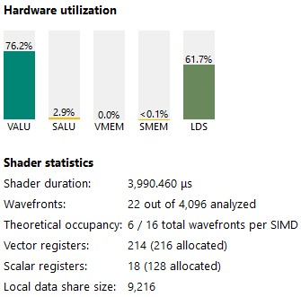
Figure 35 : kernel 6 stats
If we look at this ISA, our inner loop consists solely of v_dual_fmac instructions, each with a 1-cycle latency. Beautiful !
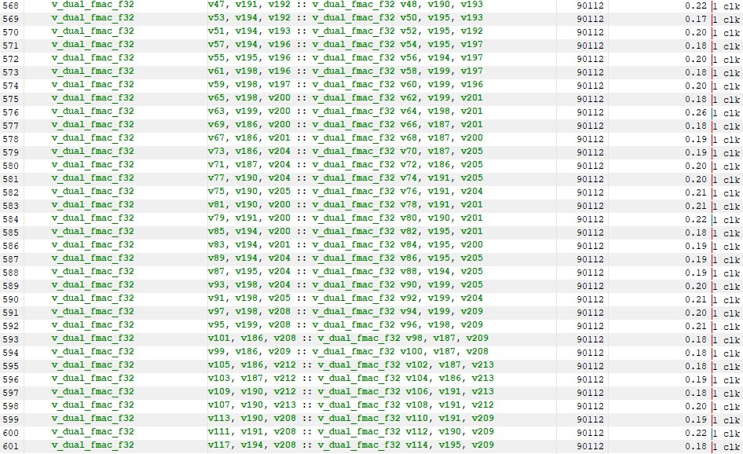
Figure 36 : kernel 7 stats
We can also see that many cycles are wasted at the end of the loop on branching. Let’s try to optimize that in the next kernel.
Kernel 7 : Loop unrolling
I previously tried unrolling the inner loop in the C++ HIP implementation, but it didn’t work out. The kernel became too large as the compiler pre-fetched more values from the LDS, and performance remained unchanged.
Now that we have a highly efficient loop and full control over the ISA, we might have better luck. For this step, I will simply duplicate the added code from Kernel 6 eight times and remove the loop mechanism.
s_cmpk_lg_i32 s14, 0x1000 ; Remove this line at the beginning of the loop s_waitcnt lgkmcnt(0) v_dual_fmac_f32 ... v_dual_fmac_f32 ... s_cbranch_scc1 .LBB0_9 ; Remove this line at the end of the loop
Duplicate 8 times our load and multiplication and make sure we increment the addresses :
v_add_nc_u32_e32 v183, 0x210, v183 ; B : 0x210 = (128+4)*4 v_add_nc_u32_e32 v202, 0x200, v202 ; A : 0x200 = (128)*4
Full kernel source code can be found here
The performance for this kernel is 3.33 ms (41255.6 GFLOPS/s).
| Kernel # | Description | Time (ms) | Performance (GFLOPS) | Relative Performance to rocBLAS |
|---|---|---|---|---|
| Kernel 0 | rocBLAS | 4.4992 | 30547.4 | 100.0 % |
| Kernel 1 | Naive version | 136.006 | 1010.54 | 3.3 % |
| Kernel 2 | LDS tiling | 34.2059 | 4017.99 | 13.1 % |
| Kernel 3 | Register tiling | 6.0341 | 22777.0 | 74.6 % |
| Kernel 4 | GMEM Double buffer | 5.3772 | 25559.6 | 83.7% |
| Kernel 5 | LDS Utilization Optimization | 4.0994 | 33526.6 | 109.8 % |
| Kernel 6 | VALU Utilization Optimization | 3.6368 | 37791.2 | 123.7 % |
| Kernel 7 | Unroll inner loop | 3.3314 | 41255.6 | 135.1 % |
VALU utilization is now above 80 %.
Figure 37 : kernel 7 stats
The instruction timing starts to look very good as well :
- v_dual_fmac have on average a 1 clk latency
- ds_loads have an average 1 clk latency
- wait for the lds is only (34 cycles ) and most of it is hidden by VALU operations
Figure 38 : instruction timing
So why aren’t we faster ?
If we look at the total latency clk in RGP, our biggest offender is the wait on the barrier. The s_waitcnt just before is the wait on the global memory loads.
Figure 39 : Remaining non hidden latencies
We can’t eliminate the barrier since we need to synchronize the threads before writing to LDS. However, if we examine the generated code for global memory loads, we notice a large code segment dedicated to it (128 lines)
Figure 40 : GMEM loads
I didn’t notice it before but even though latency is partly hidden, cumulated latency for a single load is around 1.3 Millions clks. Given that we do 16 different loads (8 for each matrix), that’s 20 millions clks latency here !
Let’s see how we can improve this in the next kernel.
Kernel 8 : Batched GMEM loads
Ok, let’s start looking at what HIP has generated for us (I have removed s_delay_alu instructions for better readability)
v_add_nc_u32_e32 v169, s4, v168 v_ashrrev_i32_e32 v170, 31, v169 v_lshlrev_b64 v[170:171], 2, v[169:170] v_add_co_u32 v170, vcc_lo, s10, v170 v_add_co_ci_u32_e32 v171, vcc_lo, s11, v171, vcc_lo global_load_b32 v168, v[170:171], off v_add_nc_u32_e32 v170, s4, v169 v_ashrrev_i32_e32 v171, 31, v170 v_lshlrev_b64 v[171:172], 2, v[170:171] v_add_co_u32 v171, vcc_lo, s10, v171 v_add_co_ci_u32_e32 v172, vcc_lo, s11, v172, vcc_lo global_load_b32 v169, v[171:172], off
Here s[10:11] hold the address of matrix B. For each each global_load_b32, the compiler computes the read offset using VGPRs from the previous iteration (v170 and v171 here). This is not ideal for a couple of reasons :
- Every global_load requires a VALU operation to complete first. VALU that won’t be used by other waves doing FMA operations.
- Dependencies between global_load operations introduce unnecessary latency
- Spending too many cycles in the GMEM state increases the likelihood of multiple waves on the same SIMD being in that state simultaneously, effectively reducing VALU work.
So ideally, we would like this 128 line section of code to be just 16 lines:
global_load_b32 v169, v[171:172], off global_load_b32 v170, v[173:174], off global_load_b32 v171, v[175:176], off ....
However, this would require us to maintain additional VGPRs and potentially use VALU instructions to update the memory addresses as well. Given that we are already using 214 VGPRs, this is clearly not feasible.
That said, we still have a fairly good SGPR budget, and according to the RDNA3 programming guide, global_load instructions can use SGPR for base addressing.
global_load_b32 v171, v214, s[10:11]
v214 is now a offset in bytes. s[10:11] a 64bit address in memory.
So we could pre-compute once all the needed addresses for the 16 loads and just increment once the offset in the loop. That would require an additional 16*2 SGPRs and 2 VGPRs to handle the offset.
After inspecting the ISA, it looks like :
- s[0:1] contains the address of the kernel parameters.
- s14 & s15 contains the blockIdx
- v0 is threadIdx.x
That’s all we need to compute the needed base addresses.
First, we load the first 128 bytes to get matrix A and B addresses into s[20:21] and s[22:23]:
s_load_b128 s[20:23], s[0:1], 0x0 ; Matrix A and B s_waitcnt lgkmcnt(0)
For matrix B, we will save the base addresses with the pre-computed offsets in s[24:39]. If we go back to our C++ code, each offset is separated by strideReadB*N = BLOCK_SIZE / BN * N, that’s 4096x4 = 0x4000 bytes
s_add_u32 s24, s22, 0x0000 s_addc_u32 s25, s23, 0 s_add_u32 s26, s22, 0x4000 s_addc_u32 s27, s23, 0 s_add_u32 s28, s22, 0x8000 s_addc_u32 s29, s23, 0 s_add_u32 s30, s22, 0xc000 s_addc_u32 s31, s23, 0 s_add_u32 s32, s22, 0x10000 s_addc_u32 s33, s23, 0 s_add_u32 s34, s22, 0x14000 s_addc_u32 s35, s23, 0 s_add_u32 s36, s22, 0x18000 s_addc_u32 s37, s23, 0 s_add_u32 s38, s22, 0x1c000 s_addc_u32 s39, s23, 0
And to compute the index in bytes, we can do :
; compute Matrix B offset s_lshl_b32 s19, s14, 7 ; BN * blockIdx.x v_add_nc_u32_e32 v203, s19, v0 ; index = BN * blockIdx.x + threadIdx.x v_lshlrev_b32_e32 v203,2, v203 ; offset = 4*index (to bytes offset)
We apply the same logic for matrix A using s[40:55] for the base addresses and v215 for the offset.
s_add_u32 s40, s20, 0x0000 s_addc_u32 s41, s21, 0 s_add_u32 s42, s20, 0x40000 s_addc_u32 s43, s21, 0 s_add_u32 s44, s20, 0x80000 s_addc_u32 s45, s21, 0 s_add_u32 s46, s20, 0xc0000 s_addc_u32 s47, s21, 0 s_add_u32 s48, s20, 0x100000 s_addc_u32 s49, s21, 0 s_add_u32 s50, s20, 0x140000 s_addc_u32 s51, s21, 0 s_add_u32 s52, s20, 0x180000 s_addc_u32 s53, s21, 0 s_add_u32 s54, s20, 0x1c0000 s_addc_u32 s55, s21, 0 ; compute Matrix A offset s_lshl_b32 s19, s15, 19 ; 4096 * 128 * blockIdx.y v_lshrrev_b32_e32 v1, 3, v0 ; threadIdx.x / 8 v_lshlrev_b32_e32 v1, 12, v1 ; 4096 * (threadIdx.x/8) v_and_b32_e32 v215, 7, v0 ; threadIdx.x % 8 v_add_u32_e32 v215, v1, v215 ; index = 4096*(threadIdx.x/8) + threadIdx.x % 8 v_add_nc_u32_e32 v215, s19, v215 ; index += 4096*128*blockIdx.y v_lshlrev_b32_e32 v215,2, v215 ; offset = 4*index
Now, in our main loop we can replace the 128 lines of code with this :
v_add_nc_u32_e32 v203, 0x20000, v203 v_add_nc_u32_e32 v215, 0x20, v215 global_load_b32 v167, v203, s[24:25] global_load_b32 v168, v203, s[26:27] global_load_b32 v169, v203, s[28:29] global_load_b32 v170, v203, s[30:31] global_load_b32 v171, v203, s[32:33] global_load_b32 v172, v203, s[34:35] global_load_b32 v173, v203, s[36:37] global_load_b32 v174, v203, s[38:39] global_load_b32 v175, v215, s[40:41] global_load_b32 v176, v215, s[42:43] global_load_b32 v177, v215, s[44:45] global_load_b32 v178, v215, s[46:47] global_load_b32 v179, v215, s[48:49] global_load_b32 v180, v215, s[50:51] global_load_b32 v181, v215, s[52:53] global_load_b32 v182, v215, s[54:55]
Our modified kernel now uses 55 SGPRs instead of 18 and 216 VGPRs instead of 214. If we take another RGP capture, we can see that this is much better, with less than 2 million clock cycles of latency for the entire process now
Figure 41 : Simplified GMEMs
After some experimentation, I found that spreading these 16 loads across the inner loop was more efficient. Our kernel currently executes six wavefronts per SIMD. Since our workgroup consists of 128 threads (4 waves), every time we execute a syncthreads, at least 2 of the 6 waves on the SIMD will compete for GMEM access. Additionally, if any of the remaining 4 waves happen to be in the same state, even more waves could be contending for memory access
Figure 42 : at least 2 waves requesting GMEM at the same time
By splitting these loads into chunks of 2, we reduce the likelihood of overlap between waves, as shown in the following diagram:
Figure 43 : splitting GMEM instructions in chunks of 2
Performance for this kernel is 2.80 ms (49047 GFLOPS/s). That’s now 60% faster than our reference rocBLAS version and almost 50 times faster than our naive approach !
Full kernel source code can be found here
| Kernel # | Description | Time (ms) | Performance (GFLOPS) | Relative Performance to rocBLAS |
|---|---|---|---|---|
| Kernel 0 | rocBLAS | 4.4992 | 30547.4 | 100.0 % |
| Kernel 1 | Naive version | 136.006 | 1010.54 | 3.3 % |
| Kernel 2 | LDS tiling | 34.2059 | 4017.99 | 13.1 % |
| Kernel 3 | Register tiling | 6.0341 | 22777.0 | 74.6 % |
| Kernel 4 | GMEM Double buffer | 5.3772 | 25559.6 | 83.7 % |
| Kernel 5 | LDS Utilization Optimization | 4.0994 | 33526.6 | 109.8 % |
| Kernel 6 | VALU Utilization Optimization | 3.6368 | 37791.2 | 123.7 % |
| Kernel 7 | Unroll inner loop | 3.3314 | 41255.6 | 135.1 % |
| Kernel 8 | GMEM loads | 2.8032 | 49047.3 | 160.6% |
Figure 44 : performance results in GFLOPS/s
Conclusion
This has been an exciting journey. What started as a simple experiment to try out HIP on Windows turned into a deep dive into the hardware details of RDNA3. My biggest inspiration for this blog was Simon Boehm’s technical post9 on matrix multiplication in CUDA—an incredibly well-written piece that clearly influenced Kernel 3.
HIP tooling on Windows is quite limited. For instance, RGP does not display bank conflicts by default. However, with enough practice, it becomes possible to analyze most performance bottlenecks using the instruction timing view.
Even though the performance results are impressive—outperforming rocBLAS by 60%—this code is clearly not scalable in its current state. Furthermore, performing custom ISA optimizations makes these changes RDNA3-specific, limiting portability. As the codebase grows, modifications become increasingly difficult to implement.
That being said, the goal of this personal project was to push performance to the limit without worrying about maintainability or flexibility. While matrix multiplication can be implemented in just a few lines of code, writing an optimized implementation is incredibly challenging. We achieved a 50x speedup between the naive kernel and our best kernel, which, in my experience, would not have been possible using only HIP C++. This highlights the value of projects like OpenAI’s Triton, which I find particularly interesting and worth exploring in the future.
Although reaching almost 50 TFLOP/s is a solid achievement, we are still not fully VALU-bound, meaning there’s likely more performance left on the table. One technique I haven’t tested yet is LDS double buffering, which could eliminate one of the barriers and potentially improve the distribution of LDS instructions across the SIMD.
Finally, I want to thank Francois Guthmann for our brainstorming session on LDS optimization, which inspired the approach used in Kernel 4.
This project has been both fun and insightful, and I look forward to investigating further optimizations in the future
All the code for the 8 kernels can be found on this github here
Changelog
18/02/2024 : Updated Figures 28 and 29. Added missing SRC2 used by destination operand for FMAC_F32. Thanks to Aditya Atluri for pointing this out.
References
-
I used ROCm 6.2.4 which was the latest version available on Windows 11 at the time I wrote this link ↩
-
Radeon Graphic Profiler is the recommended profiler on Windows ↩
-
I didn’t spend much time analysing how rocBLAS works but after exploring the ROCBlas repo, it looks like rocBLAS uses a project called Tensile to generate highly optimized GEMM codes for AMD GPU. ↩
-
There is a great blogpost by Francois Guthmann here that goes into these details. ↩
-
According to the RDNA3 ISA programming guide, the Scratch memory is similar to the global memory but instructions access a private (per-thread) memory space ↩
-
To enable cumode, just add
-mcumodeoption when building with hipcc. ↩ -
How to Optimize a CUDA Matmul Kernel for cuBLAS-like Performance: a Worklog ↩
COLOPHON
Projections Nº 00, a sample issue: three pieces from one reading list, each in full and in its own world, set by the real pipeline.
JPEG compression, Sophie Wang, 13 March 2026. sophielwang.com/blog/jpeg
Deriving Muon, Jeremy Bernstein, 7 March 2025. jeremybernste.in/writing/deriving-muon
Optimizing Matrix Multiplication on RDNA3: 50 TFlops and 60% Faster Than rocBLAS, Seb-V, 12 January 2025. seb-v.github.io
The words and pictures are their authors'. The front is a drawing by Taili Zhuang, from his 2020 portfolio. The drawings on the openers are ours.